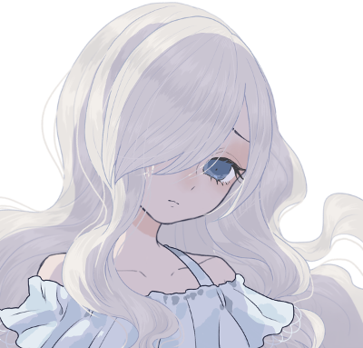

GM : じゃあPC自己紹介からやっていきましょう、お願いします！
新藤亜理紗 : 了解了解！
■PC1：新藤亜理紗
ロイス：柊みなみ
あなたはFHが運営するアイドル事務所、ファム・ファタールに所属するアイドルだ。
柊みなみはあなたが教育係を務めている新人アイドルであり、同じユニットのメンバーでもある。
ある冬の日の夜、あなたは事務所に立ち寄ると、ファンからペアの温泉旅行券をプレゼントされて悩んでいるみなみと出会う。
一人では旅行にも行けないみなみに付き合って、あなたは次の休日にみなみと共にS市の温泉郷に旅行することになった。
新藤亜理紗 : 「はぁい、みなさんお元気ですかぁ？」
新藤亜理紗 : 芸能事務所ファム・ファタール所属の新藤亜理紗！ 清楚系の人気アイドルでテレビにドラマに引っ張りだこ。絶賛売り出し中だ。
新藤亜理紗 : …というのは表の顔。実は芸能界の支配を目論むFHのセル、ファム・ファタールの一員なのだ！
新藤亜理紗 : ふだんは猫被って清楚系で通しているが、実際の性格は自分の容姿に絶対を自信を持つけっこう傲慢な16歳。
新藤亜理紗 : ちなみにFHの構成員なので戦っても一流だ！
新藤亜理紗 : 家庭の事情もあってお金のことには結構うるさい。温泉旅行券を無駄にするなんて許さないぞ！ そんな感じです。
新藤亜理紗 : 公称102cmの威圧的なバストと威圧的な態度で頑張るぞ！ 以上！
GM : 威圧的なおっぱいほんと好き、ありがとありがと！
GM : じゃあゆるゆる初めて行きましょ、よろしくお願いします！
新藤亜理紗 : わあい！よろしくお願いします！
GM : まずはオープニングから。登場侵食5点お願いします
system : [ 新藤亜理紗 ] 侵蝕率 : 29 → 34
GM : 冬に入り、少し寒さが厳しくなってきたある日の夜のこと。
GM : 新藤亜理紗、あなたは今日のアイドルとしての仕事を終えた後、一度ファム・ファタールの事務所に寄ってから帰宅することにした。
GM : セルリーダーの二条純恋に報告などをした後、事務所の休憩室の前を通りがかると、見知った一人の少女がソファに座っていることに気づく。
GM : ふわふわとした柔らかそうな白い髪を長く伸ばし、自分に自信の無さそうな暗く青い瞳を隠した少女。
GM : 柊みなみ。あなたが教育係を務め、同じユニットのメンバーでもあるアイドルだった。
GM : あなたとみなみはその関係性故に仕事でもプライベートでも共に行動することが多いが、それでも常に一緒にいるというわけではない。
GM : 今回のように別々に行動することもあり、今日みなみを見たのはこれが初めてだった。
GM : 確か今日のみなみは事務所で戦闘訓練や個人レッスンを受けていた日だと思い出せる。
GM : レッスンが終わり、帰る前にここで休憩をしていたのだろう……。
新藤亜理紗 : 「あぁ～、今日も疲れましたねぇ～」 ドサッと勢いよくみなみの横に腰掛ける
新藤亜理紗 : 「みなみもこっちに戻ってきたんですかぁ？」
柊みなみ : 「！？」 亜理紗が来ていたことに気付かなかったのか、勢いよく座られてびっくりして肩を震わせる
柊みなみ : 「あ……亜理紗さん……」
新藤亜理紗 : 「なんですかぁ、お化けでも見たような顔してぇ」大きな胸を支えて酷使した肩をほぐしながら
新藤亜理紗 : 「感覚は鋭いはずなのに、私の存在感に気付かないなんて珍しいじゃないですかぁ？」
柊みなみ : 「え、えと……ちょっとぼーっとしちゃってて……ごめんなさい……」
GM : そこであなたは、みなみが一枚の封筒を持っていることに気づく。
新藤亜理紗 : 「別に謝ることじゃないですけどぉ……なんですかぁそれ？」背もたれに思い切り体重をかけながら封筒を指さす
柊みなみ : 「貰ったんです……。その、ファンの方から……」と、言われたところで
GM : あなたはすぐにこれがどういう経緯でみなみに渡されたのか理解する。
GM : ファム・ファタールの事務所には、ファンからアイドルに向けてよくプレゼントが贈られてくる。
GM : ただし、その中からアイドル本人が受け取れるプレゼントはほんの少しだけだ。
GM : 飲食物は何が混ぜられているか分からないため当然全て廃棄される。
GM : ぬいぐるみ等の一見危険が無さそうなものでも、盗聴器や盗撮カメラが仕込まれていることもありえる。
GM : また、ファム・ファタールを敵視するFHのエージェントや、UGNからの爆発物が隠されているという可能性も否定できない。
GM : そういった様々な危険性が無いか事務所側でしっかりと調べた後、アイドル本人が受け取ることを決めて初めてプレゼントは届けられる。
GM : つまりこの封筒は事務所側が危険が無いと判断し、みなみが欲しいと思ったものなのだと分かるだろう。
新藤亜理紗 : 「プレゼントぉ？ 珍しいですねぇ、何を貰ったんですかぁ」
新藤亜理紗 : ふだんそういうものを積極的に受け取っているのを見ないので興味津々でいる。ちなみに亜理紗は貰えるものは何でも貰う。
柊みなみ : 「はい……。えっと……です、ね……」
GM : みなみは封筒の中に入っていたものを取り出してあなたに見せる。
GM : それはペアの温泉旅行券だった。
GM : 日本海に面したS市の有名な温泉旅館・天水亭に泊まれるらしい。確かカニ料理が人気の旅館だ。
GM : チケットの他には、贈り主の手紙が添えられている。
GM : 手紙を読むと、これはクジで当たった旅行券で是非みなみに行ってもらって仕事の疲れを癒して欲しい、ということが丁寧に書かれていることが分かる。
柊みなみ : 「これ……だったん、ですけど……」
新藤亜理紗 : 「旅行券？！ 随分珍しいもの貰ったんですねぇ」
新藤亜理紗 : 「しかもテレビでもよくやってる所の温泉じゃないですかぁ」
新藤亜理紗 : 「（こんなのをくれるなんて、みなみにも熱心なファンがついたんですねぇ）」ちょっと可笑しくもあり、感慨深くもあり、薄く笑いを浮かべる
柊みなみ : 「はい……。わ、わたしはあんまり知らなかったんです、けど……有名なとこ、なんですよね……」
新藤亜理紗 : 「みなみはまだ旅レポの仕事とかやってないですもんねぇ？ さっきは休みの予定でも考えてたんですかぁ？」
柊みなみ : 「そうですね……予定は確認、していたんですけど……」
柊みなみ : 「……その……。貰ったんですけど、やっぱり……どうしようかなって……思ってて……」
新藤亜理紗 : 「ええ！？ 行かないんですかぁ？」
柊みなみ : 「あ、ぅ……。だって、わたし……温泉になんて、行ったことがなくて……」
柊みなみ : 「そもそも、旅行自体どういけばいいのか、分からなくって……」 申し訳なさそうに俯いて
新藤亜理紗 : 「行ったことがないから行ってみるんですよぉ。こういうのは」
新藤亜理紗 : 「行き方がわからないっていうなら、私でも、マネージャーでも聞けば教えますよぉ？」
柊みなみ : 「そ、そっか……そう、ですよね……」
柊みなみ : 「じゃあ、教えて欲しい……のです、けど……」 不安そうに
新藤亜理紗 : 「それでいいんですよぉ。ふふ、じゃあペアで行くってことでいいですねぇ？」
柊みなみ : 「え……！？」 びっくりして顔を上げる
新藤亜理紗 : 「それって二人用の旅行券なんですよねぇ？ 一人でも使えるけど二人で行かないと勿体ないじゃないですかぁ」
新藤亜理紗 : 「私も最近肩が凝ってて、ちょうどリフレッシュしたかったんですよねぇ。そうと決まったら予定をちゃーんと空けないと」スマホでメールを書き始める
柊みなみ : 「そ、それは、そう……なんですけど……」
柊みなみ : 「良いんです、か……？一緒に行ってもらって……。わたし、行き方だけ教えてもらうのかと、思ってて……」
新藤亜理紗 : 「当り前じゃないですかぁ、温泉ですよぉ。オ・ン・セ・ン！」
柊みなみ : 「お……お、ん、せ、ん……」 不思議そうに
新藤亜理紗 : 「それに、みなみ一人だけ行かせたら何もできない間に旅行が終わっちゃうかもしれませんからねぇ？」悪戯っぽく笑う
柊みなみ : 「え、えへ……。それは……そうかも、しれません……」 困った風に小さく笑っているが、嬉しそうだと分かる
新藤亜理紗 : 「ふふん♪」その様子を見て上機嫌そうに
新藤亜理紗 : 「じゃあ、それまでに仕事は片づけとかなきゃですねぇ。ちょっと忙しくなりますよぉ」
新藤亜理紗 : 「（マネージャーにはビシバシ働いて貰わなきゃいけませんねぇ）」メールでめちゃくちゃ無茶ぶりを書いてる
柊みなみ : 「は……はい……！」 こくんと頷いて
GM : マネージャーから悲鳴の返信が来るが、もうそんなことは関係無い。
GM : 亜理紗とみなみは予定を開けて連休を取ることが出来、二人で温泉旅行へと行くことになった……。
GM : シーンエンド。
GM : ミドルフェイズになります、登場侵食５点お願いします！
system : [ 新藤亜理紗 ] 侵蝕率 : 34 → 39
GM : 旅行当日。
GM : 昼過ぎに出発し、新幹線に乗って十五時頃には旅館に到着する予定になっている。
GM : そろそろ出発の時間が迫っていた。あなたは自分の部屋で準備を済ませている……。
新藤亜理紗 : 「財布に携帯、替えの下着、服、防寒着、モバイルバッテリーも充電してるし…大丈夫ですねぇ」荷物の中を指さし確認
新藤亜理紗 : 「（まあ、いざとなったらマネージャーにすっ飛んできてもらえばいいですし、荷物は少な目で行きましょうかぁ）」
新藤亜理紗 : 「（みなみは大丈夫ですかねぇ。持っていくものメモは渡しておきましたけどぉ）」
新藤亜理紗 : 「んしょっ…っと」肩に鞄をかけて部屋を出る。寮の隣がみなみの部屋だ。
新藤亜理紗 : 「みなみ、準備できてますかぁ？」こんこん部屋をノックする。
柊みなみ : 「亜理紗さん……！は、はい、大丈夫です……！今、出ますね……っ」
新藤亜理紗 : 「はーい（だいたい大丈夫じゃないんですよねぇ…）」ちょっと不安顔
GM : 部屋の奥からみなみの声が返って来た直後、
柊みなみ : 「……あっ……！」
GM : あなたの予感は的中したのか、みなみの小さな叫び声をかき消すように、バリンッと何かが割れる音が響いた。
新藤亜理紗 : 「なんですかぁ？？」
柊みなみ : 「あっ……あぅ……その……」
新藤亜理紗 : 「変な音しましたけどぉ、今何か割れませんでしたぁ？」
柊みなみ : 「う、うぅ……」
GM : 程なくして、部屋の扉が開く。
GM : そこには暖かそうなコートに身を包んだみなみがいた。手荷物も纏まっており、準備は出来ているようだが……。
GM : 奥に見える部屋の床にはガラスの破片と、割れたマグカップが転がっていた。
新藤亜理紗 : 「ああー。やっちゃいましたねぇ。怪我とかないですかぁ？」
柊みなみ : 「は、はい……。けがは、ないです……」
新藤亜理紗 : 「もう、そんな急がなくても大丈夫ですよぉ、お仕事じゃないんですからねぇ？」
新藤亜理紗 : 「ほら、さっさと片づけて出発しちゃいましょう」
柊みなみ : 「ご、ごめんなさい……。箒、取ってきます……」
新藤亜理紗 : 「はいはい」マグカップの大きい破片を拾ってごみ箱に入れる
GM : ではそんな感じで、あなたはみなみと一緒に割れたマグカップを片付けれる。
柊みなみ : 「うぅ……ほんとにごめんなさい……。時間、大丈夫でしょうか……」
GM : と、みなみが気にしているが、電車の時間にはまだ全然間に合いそうだった。
新藤亜理紗 : 「こういうトラブルは旅行に付き物なんですよぉ？ ちゃんと最初から計算してるから大丈夫ですよぉ」
新藤亜理紗 : 「だから、ま、怪我とかしなかったら大丈夫ですよぉ。お風呂に入ったとき染みますからねぇ」
柊みなみ : 「そ、そうだったんですか……？よかった……」
柊みなみ : 「分かりました……。じゃ、じゃあ、行きましょう……っ」 申し訳なさそうだった表情が少し和らいで
新藤亜理紗 : 「はいはい、乗り換えが多いから、はぐれないようにいきますよぉ」
柊みなみ : 「はい……！」
GM : ではあなた達はファム・ファタールの寮を出発し、近くの駅に到着する。
GM : まずはここから何度か乗り換えて、新幹線の停まる大きな駅へと電車で向かう必要があった。
GM : そこまでの切符を買うために券売機へと向かうのだが、
柊みなみ : 「…………」
GM : みなみは切符を買おうとせず、不安そうな目で券売機とその上にある路線表を何度も見ている。
新藤亜理紗 : 「どうしたんですかぁ？」もう切符買ってる
柊みなみ : 「う、ぇ、えっと……」
柊みなみ : 「どう買えばいいのか、分からなくて……」
柊みなみ : 「電車……乗ったことが無いんです……」
新藤亜理紗 : 「そうなんですかぁ！？ 教えるからちょっとそこで待ってて！」
柊みなみ : 「そ、そうなんです……っ。は、はい」 待つ
新藤亜理紗 : 威圧的な乳をぶつけながら人込みをかき分けて改札から戻って来る
新藤亜理紗 : 「本当にプライベートでどこにも行かないんですねぇ。目的の駅は…この路線を乗り換えて、ここですよぉ」タッチパネルをひとつずつ操作していく
柊みなみ : 「どこにも……そうですね、全然……。あ……、そうするん、ですね……？」 ちゃんと見て
新藤亜理紗 : 「（一人だと本当にどこにもいかなさそうですもんねぇ…）最初は面倒だけど一回やれば覚えるから大丈夫ですよぉ」
新藤亜理紗 : 「一人で来ててわからないときは、駅員さんに聞けば教えてくれるからそんな不安がらないでいいんですよぉ」
柊みなみ : 「駅員さんに……。は、はい、分かりました」 こくこくと頷く
新藤亜理紗 : 「そのうち一人でお仕事行ったりもするし、いろいろ教えないとダメですねぇ」練習がてらまたどこか行こうかとか考えつつ
新藤亜理紗 : 「切符を買ったらここ、改札で通すんですよぉ」
柊みなみ : 「ここ……？」 買った切符を持って、おそるおそる改札に通しに行く
柊みなみ : 「……！す、吸い込まれました……！」 びっくりして見てる
新藤亜理紗 : 「……ほら、早く前に出ないと扉が閉まりますよぉ」 初々しい目で見てる
柊みなみ : 「あ……！は、はいっ」 ぱたぱた急いで改札を潜る
新藤亜理紗 : 「切符！ そっちから出てきた切符持って行くんですよぉ！」わたわた
柊みなみ : 「え……！？そっち……あ、こ、これ……持つんですね……！？」 もっとわたわたしながら切符を回収
新藤亜理紗 : 「（小さい頃を思い出しますねぇ…）」疲れながらもちょっと懐かしい気持ちになりながら改札を通過する
柊みなみ : 「な、なんだか、ごめんなさい……。でも、教えてくれてありがとうございます……」
新藤亜理紗 : 「別にいいんですよぉ。改札は初めて通るとみんなビックリしますからねぇ」
新藤亜理紗 : 「（Suicaを使わせるのはまだ危なそうですねぇ）」
GM : みなみが切符の買い方も知らず色々ともたついたものの、あなた達はちょうどホームに着いた電車に無事に乗ることが出来た。
GM : 初めて電車に乗るみなみは最初は不安そうにしていたが、新幹線に乗り換える頃にはすぐに慣れて窓から見える景色を楽しんでいるようだった。
GM : そうして二時間ほど経った後。あなたは列車に乗りながら駅弁を食べていると、窓の外が青く輝く。
GM : それは日本海の綺麗な海の景色だった。目的地であるS市温泉郷はもうすぐであることにあなたは気付くだろう。
柊みなみ : 「…………」 みなみは駅弁のおかずを食べることに集中していて気付いていない。
新藤亜理紗 : 「（もっとトラブル起きるかと思ったけどだいぶ落ち着いてますねぇ）」鱒の寿司食べてる
新藤亜理紗 : 「ほら、海が見えましたよぉ」窓の外を指指す
柊みなみ : 「え……？」 顔を上げて
新藤亜理紗 : 「天気も良いみたいでよかったですねぇ」日本海側の天気は荒れやすいので一安心
柊みなみ : 「わ……！ほ、ほんと、ですね……」 嬉しそうに口元を小さく緩ませて景色を眺める
新藤亜理紗 : 「ん、ふふ……写真でも撮っておきますかぁ」スマホを取り出す
柊みなみ : 「写真、ですか……？良いと思います……」
新藤亜理紗 : 「何言ってるんですかぁ、二人で撮るんですよぉ」
柊みなみ : 「え……！？け、景色の方を撮るのかと……」
新藤亜理紗 : 「空だけ撮るのが好きな人もいますけどぉ、私はそうじゃないんですよぉ」通路側のほうから自分たちにカメラを向けて、空いたほうの手でピースする
柊みなみ : 「……！？」 わたしも？とびっくりしてる
新藤亜理紗 : インカメラに映った構図は明らかに景色よりも二人のほうがメインだ！
新藤亜理紗 : 「はい、チーズ！」 笑顔でシャッターを切る
柊みなみ : 「ち……ちーず……！」 控えめに小さくピースして
新藤亜理紗 : 「うん、まあまあのが撮れましたねぇ」出来上がりを確認すると、素早く色調補正をかけたりしている
新藤亜理紗 : 「（後でSNSに上げましょうっと）」事務所のグループLINEに送信
柊みなみ : 「……？ふふっ……そうですね……」 景色あんまり映ってないような？と不思議に思うが二人で映ってるの見て嬉しそうに
GM : グループLINEに上げたらちょうど休憩したり暇だったメンバーが反応したりしてますね
新藤亜理紗 : 「まーた乳しか見てない人がいますねぇ」休日の余裕からその反応をニヤニヤして見てる
GM : ではそうしている内に、車内にアナウンスが響く。旅館の最寄り駅の名前だ。
柊みなみ : 「あ……。次、で降りるんでしょうか……？」 亜理紗ちゃんのスマホをのぞき見しながら
新藤亜理紗 : 「そうですよぉ。間違えて次の駅に行くと面倒なことになるから気を付けてくださいねぇ」
柊みなみ : 「は、はい……！」食べ終わった駅弁の箱を袋に入れて片付けながら
GM : ではあなた達は電車を降り、S市温泉郷に到着する。
GM : 駅を出るとそこはすでに温泉街だった。どこか懐かしさを感じる街並みが広がっている。
柊みなみ : 「ここが……」 初めて来る場所できょろきょろしてる
新藤亜理紗 : 「へぇ、結構雰囲気良いですねぇ」東京から出るの久々だからテンション高め
柊みなみ : 「そうですね……。なんだか、東京とは全然違う感じがします……」
新藤亜理紗 : 「東京ほど便利じゃないですけどねぇ、たまに来る分には楽しいですよぉ」
新藤亜理紗 : 「ほら。山がこんなに近い」火山帯
柊みなみ : 「あ……ほんとです……。海も山もあるなんて、お得ですね……」 見上げ
新藤亜理紗 : 「東京のほうはこういう山ってもう全然無いですからねぇ。海は近いけど」
新藤亜理紗 : 「ビルとかもないから景色がよく見えますし、緑が多いから空気もいいですねぇ…！」うーんと伸びをする
柊みなみ : 「空気……。そっか……どうしてだろうって思ったら、空気が違うんですね……」
柊みなみ : 「ふふ……。なんだか、これだけで満足しちゃいそうな、気がします……」 空気を吸い込みながら真似して伸びをしてる
新藤亜理紗 : 「みなみの方が鼻も利きそうですもんねぇ？ いつもの場所から離れるだけでも結構リラックスできるもんですよぉ」
新藤亜理紗 : 「さて、とりあえずチェックインして荷物置きますか」歩き出す
柊みなみ : 「そうかもしれません……。は、はいっ」 ついて行く
GM : あなた達はそこから徒歩で旅館へと向かっていく。駅から十五分も歩けばつく距離だったはずだ。
GM : が、その途中。
GM : あなたはどこか遠くからヴァイオリンの音色を耳にする。
GM : 潮風に乗って微かに聴こえてくるだけだが、それでもとても綺麗な音色だと分かるだろう。
新藤亜理紗 : 「……？ こんなところでヴァイオリン、ですかぁ？」
柊みなみ : 「ヴァイオリン……。ほんと、ですね……誰か弾いてるのでしょうか……？」
GM : みなみは≪ウサギの耳≫を使用。この音がどこから聴こえてくるのかを探る。
柊みなみ : 「……！あっちから、みたいですけど……」
GM : みなみは旅館を通り過ぎて海岸に続く道を指差す。
GM : どうやらその音は潮風に乗って海辺の方向から聴こえてくるようだった。
新藤亜理紗 : 「気になりますねぇ、誰か有名なヴァイオリニストでも休暇に来てるのか…」
柊みなみ : 「行って、みますか……？多分、そんなに離れてはいなさそうです、し……」
新藤亜理紗 : 「くふふ、こういうのも旅行の楽しいところですからねぇ。そうしましょ」
柊みなみ : 「ふふ……分かりました……」 つられて楽しそうに笑って
GM : ではあなた達はヴァイオリンの音色を辿り、海岸に辿り着く。
GM : そこは海水浴場として使われている遠浅の砂浜だった。
GM : 今の季節に泳いでいる観光客は当然いない。
GM : しかし穏やかな波が打ち寄せる海に向かって立ち、ヴァイオリンを演奏する者が一人いた。
GM : そのヴァイオリンを弾いていたのは幼い少女だった。
GM : 金色の髪をしたその少女はおそらく小学生……小学校高学年くらいだろう。
GM : しかしそのようなまだ幼い年齢にも関わらず、彼女が奏でるヴァイオリンの音色は優しく綺麗なものだった。
GM : 近くで聴いてみるとその演奏は非常に上手く、プロ並だと分かる。ずっと聴いていたいと思える程だろう。
新藤亜理紗 : 「……！」小さい子が弾いているのを見つけて驚く
柊みなみ : 「あ……あの子、が……？」 想像していた人物と違ってびっくりした様子
新藤亜理紗 : 「見かけによらないものですねぇ…」ちょっと良いもの見れたなって得した気分
新藤亜理紗 : そんな感じで演奏に聞き入ってる！
GM : ではそのまま演奏を聴いていると、一曲終えたところで
少女 : 「……？あんた達……」
GM : 少女はあなた達の存在に気付いたようで、そちらに顔を向ける。
新藤亜理紗 : 「いい演奏でしたよぉ」小さく拍手
柊みなみ : 「……！」 一緒にぱちぱちと拍手して
少女 : 「ありがと。……って、いうか」
GM : 少女は嬉しそうにニッと笑うと
少女 : 「アイドルの柊みなみに、新藤亜理紗！？」
新藤亜理紗 : 「…あー、わかっちゃいましたかぁ？」ちょっと嬉しそう
柊みなみ : 「し、知ってるんです、ね……！」
少女 : 「やっぱり！分かりますよー、よく知ってます」
少女 : 「……お兄ちゃんが、ファンでしたから！」
新藤亜理紗 : 「あらぁ、嬉しいですねぇ」にっこり外行きスマイル
少女 : 「えっへへ……」
柊みなみ : 「……あれ？だった、って……。じゃあ、今はそうでもないんでしょうか……」
少女 : 「あー、ううん、そういうわけじゃないんです！お兄ちゃんは……数ヵ月前に起こった災害で亡くなったから……」
新藤亜理紗 : 「……！ それは……気の毒に……」さすがに神妙な顔になる
柊みなみ : 「あ……うぅ……。ご、ごめんなさい、その……」
少女 : 「いえいえ……。まあ、そんなことよりっ」
少女 : 「ここには二人で温泉旅行で来たんですか？それとも、もしかしてテレビのロケとか？」
新藤亜理紗 : 「（…よくできた子ですねぇ）」
新藤亜理紗 : 「今日は仕事じゃなくて、プライベートなんですよぉ。ね、みなみ」
柊みなみ : 「は……はい！ファンの人から、旅行券を頂いて……！」
少女 : 「やっぱり！ロケにしては他に関係者っぽい人が見えなかったから、そうだと思いましたっ」
少女 : 「……あっ、ごめんなさい！自己紹介がまだでしたよね。あたしは島崎ひよりっていいます！」
新藤亜理紗 : 「ひよりさん、ですねぇ。よろしくお願いします」
柊みなみ : 「よ、よろしくお願いしますっ……」
GM : と、彼女が名前を名乗ったところでですね。
GM : 知識：音楽で判定をお願いします。目標値は４。
新藤亜理紗 : 1dx>=4(1DX10>=4) ＞ 2[2] ＞ 2 ＞ 失敗
新藤亜理紗 : 知ら……ない！
GM : 知らな…かった！ソロシだしちょっとあれね、一応みんみんにも判定させてみよう
柊みなみ : 2dx(2DX10) ＞ 6[1,6] ＞ 6
GM : 知っとる！
新藤亜理紗 : 知っとる！
柊みなみ : 「……？あ、れ……？島崎ひより、って……」 何かを思い出したようにつぶやく
新藤亜理紗 : 「？」なにも知らん顔
柊みなみ : 「あの……違ったら、申し訳ないんですけど……」
柊みなみ : 「小学生の、ヴァイオリニスト……ですよね……？確か、天才って呼ばれてるって……」
柊みなみ : 「この前、事務所の人がいっていたような……」
新藤亜理紗 : 「そうなんですかぁ！？ へぇぇ道理で……」
島崎ひより : 「わ、知ってるんですね……！？ふふっ、そうですよ」
柊みなみ : 「あ……で、でも……」
柊みなみ : 「確か、数ヵ月前から……ヴァイオリン……やめたって聞いた気が……」
新藤亜理紗 : 「……！ じゃあ、今弾いてたのは…」
島崎ひより : 「あー……そうなんですよね、合ってますよ」
島崎ひより : 「お兄ちゃんが亡くなってからなんですけど……もうコンクールに出ようとか、プロになろうって気が無くなったんですよねー……」
島崎ひより : 「あたしがヴァイオリンを続けようと思ったのは、全部お兄ちゃんのおかげみたいなものだったから……」
島崎ひより : 「今弾いてたのはただの趣味ですよ。こうして海を見ながら、たまに一人で弾いたりするの」
新藤亜理紗 : 「そうだったんですねぇ……」
柊みなみ : 「…………」 何て言えばいいかわからず戸惑っている
新藤亜理紗 : 「（他人事ながら勿体ないですねぇ…でも、あまり踏み込むようなことでもないか…）」
島崎ひより : 「……うわっ、なんか明るくない話題でしたよね！？」
島崎ひより : 「まあ、別にいいんですよっ。今はヴァイオリンの代わりに、やりたいことも出来てますからっ」
新藤亜理紗 : 「代わりにやりたいこと、ですかぁ？」
島崎ひより : 「はいっ。お二人だって、アイドルだけど他にもやりたいことをするものでしょう？それと似たようなものですっ」
新藤亜理紗 : 「（随分しっかりしてる…）」驚く
新藤亜理紗 : 「確かにそうですねぇ。ひよりさんは何をしたいのか聞いても？」
島崎ひより : 「んー、そうですね……」
島崎ひより : 「……今は内緒で！もし次会えたら教えます」
島崎ひより : 「って言っとけば、お二人とまた会ったりできるかなー、みたいな！」 笑って
新藤亜理紗 : 「あははぁ、これは一本取られましたねぇ」
新藤亜理紗 : 「それじゃ、またヴァイオリンの音が聞こえたら来ないといけませんねぇ」
柊みなみ : 「ふふ……」 緊張した面持ちだったが少し和らいで
島崎ひより : 「ですね！……あっ、そうだ」
島崎ひより : 「じゃあ、あたしのヴァイオリンの音色を覚えておいてもらうためにも……もう一曲、聴いて行きませんか？」
新藤亜理紗 : 「良いんですかぁ？ 是非、お願いしちゃいましょうかぁ、みなみ？」
柊みなみ : 「は、はい……！凄くお上手……でしたし……お願いできるなら……！」
島崎ひより : 「よーし、決まりですね！じゃあ、行きますっ」 ヴァイオリンを持ち直して
GM : ひよりはそう言って、ヴァイオリンの演奏を始める。
GM : 流れるような動きで弓が弦を弾く度、ヴァイオリンから美しい音色が奏でられる。
GM : 先程遠くから聴いたのと同じ優しく穏やかな曲。しかし、今回の演奏はよく聴けば全く違うものだった。
GM : あなたはひよりのヴァイオリンから歓喜の感情を感じるだろう。あなた達の出会いを祝福するかのような喜びの音だ。
GM : 静かな曲調でありながらその魂は揺さぶられ、聴いているだけでこちらも嬉しくなってくる。
GM : そんな冬の海辺の肌寒さも忘れてしまうような温かいヴァイオリンが数分続き、気が付けばあっという間に演奏は終わっていた。
新藤亜理紗 : 「おお……」ずっと聴き入っていた。曲の終わりとともに、思わずぱちぱちと拍手をする
柊みなみ : 「……。す、すごい……」 呆然としていたが拍手する
島崎ひより : 「えっへへへ……。ありがとうございます」 一礼する
新藤亜理紗 : 「仕事柄音楽はいろいろ聞きますけどぉ……本当にすごいですねぇ」猫被りモードだけどお世辞ではない
島崎ひより : 「ほんとですか！？亜理紗さんにそう言われるなんて嬉しいですっ」
新藤亜理紗 : 「大きな会場で聞けないのが残念なくらいですよぉ。ありがとうございました」
柊みなみ : 「ほんと、ですね……。あ、ありがとうございますっ」
島崎ひより : 「いえいえー。そこまで褒められると何だかもったいなく感じちゃうなぁ……」
新藤亜理紗 : 「ふふ、また気が変わってプロを目指すことがあれば、うちの事務所も協力させて貰いますよぉ」
島崎ひより : 「……ふふっ、じゃあもしもそんな時が来たらお願いしちゃおうかな」
新藤亜理紗 : 「（これだけの才能が勿体ないですもんねぇ。他人から口を出すことではないんでしょうけどぉ…）」
新藤亜理紗 : 「さて……名残惜しいけど、そろそろ行かないとチェックインの時間に遅れてしまいますねぇ」腕時計を確認
柊みなみ : 「え……？あ、ほんと……ですね……？」
新藤亜理紗 : 「ですよぉ。素敵すぎる演奏も困りものですねぇ。また会えたらよろしくお願いしますよぉ」
島崎ひより : 「そっか……旅行に来たっていってましたもんね」
島崎ひより : 「はい、じゃあまた！今度お会い出来たら、またお二人のために演奏しますよっ」
新藤亜理紗 : 「はぁい！」手を振って
柊みなみ : 「……それじゃ、また……！」 手を小さく振って
GM : ではあなた達は小さなヴァイオリニストと別れ、海辺を後にする。
GM : 向かう先は、天水亭──今日泊まることになる旅館だ。
GM : シーンエンド。
GM : 旅館に着きます！登場侵食+5点お願いします
system : [ 新藤亜理紗 ] 侵蝕率 : 39 → 44
GM : ひよりと別れたあなた達は、旅館・天水亭の前まで辿り着いた。
GM : 天水亭はS市の中で最も海に近い場所に建つ、純和風の温泉旅館だ。
GM : 和式の建築は美しく、外観からかなり大きい旅館だと分かるだろう。
新藤亜理紗 : 「へぇぇ、近くで見ると雰囲気ある旅館ですねぇ」
新藤亜理紗 : 「（旅行サイト等で写真は確認してましたけどぉ）」実物を見るとテンションあがりがち
柊みなみ : 「和風なんですね……。もっとホテルみたいな感じなのかと思っていました……」 見上げてる
新藤亜理紗 : 「昔からの雰囲気を大事にしてるんじゃないですかぁ？ よくわかりませんけどぉ」
柊みなみ : 「そうなんですね……。わたしもよく分かりませんけど……この雰囲気は何となく好きかもしれません……」
新藤亜理紗 : 「ふふ、畳の匂いが落ち着くんですよねぇ」
柊みなみ : 「畳の……匂い……？」 あんまり知らないのかよく分かってない
新藤亜理紗 : 「ああ、みなみはあんまり馴染みがないんですねぇ？ 事務所にも和室とかありませんしぃ」
柊みなみ : 「はい……そうですね……。寮も洋風ですし、アイドルになる前も……もっと無機質な場所にいましたから……」
新藤亜理紗 : 「……これからはいろんなところに遊びにいって経験しましょうねぇ。仕事のほうもずいぶん慣れてきましたしぃ」
新藤亜理紗 : 「（なかなか過去を乗り越えるには時間がかかりそうですねぇ）」ちょっと気の毒そうな顔
柊みなみ : 「……！はい……！」 こくこくと頷く
新藤亜理紗 : 「ふふ、入口はこっちですねぇ。結構歩いて疲れちゃったしチェックインして一休みしましょぉ」歩いてくぞ！
柊みなみ : 「はい……行きましょう……っ」 ついていく
GM : あなた達は天水亭に入っていく。
GM : ひよりと会っていてチェックインの時間帯を少しだけ過ぎているからか、受付は混んでおらず待たされることはなかった。
GM : すぐに三階にある客室へと通される。
GM : 扉を開けると、そこは畳敷きの清潔な和室だった。二人で使うのに丁度良い程度に広々としている。
GM : 部屋の窓は海に面していて解放的で、水平線を眺めることが出来るようだった。
新藤亜理紗 : 「ああ～良いですねぇ。旅してるって感じでぇ！」荷物を置くのもそこそこに部屋と窓の間の空間にある椅子にダイブする
柊みなみ : 「わ、わぁ……。これが和室なんですね……」 荷物を置き、屈んでぺたぺた畳を触ってる
新藤亜理紗 : 「そうですよぉ。一面腰掛けたり寝転がったりできる、昔の人の発明ですねぇ」畳の上に大の字に寝転がる
柊みなみ : 「えっ……。で、でも、いいんですか……？床なのに……」 戸惑った様子で見てる
新藤亜理紗 : 「ここは床でもあり休憩スペースでもあるんですよぉ」ごろごろ
柊みなみ : 「そうなんですか……？」 真似しておそるおそる横になってみる
新藤亜理紗 : 「（なんか実家を思い出しますねぇ）」純和風の家
新藤亜理紗 : 「そうですよぉ…人に見られてるときは控えたほうがいいですけどねぇ」リラックスして普段は絶対に見せないだらけた表情になっている
柊みなみ : 「分かりました……」 控えめに腕と足を広げた大の字になって
柊みなみ : 「ふふ……亜理紗さん、ふにゃってしてる……」
新藤亜理紗 : 「普段はなかなかこんなことできませんからねぇ」ふにゃふにゃ
柊みなみ : 「そうかもしれません……。いつも人がいますもんね……」 ぐてっと横になって畳の気持ちよさを感じてる
新藤亜理紗 : 「この仕事してるとなかなか人の眼から離れられないですからねぇ」
新藤亜理紗 : 「ずっとこうしてたいくらいですけどぉ……ご飯の前にお風呂にいかないといけませんねぇ？」時計見つつ
柊みなみ : 「え……？」
柊みなみ : 「あっ……そう、ですね……。すっかり忘れていました……温泉ですもんね……」 上体を起こしてぺたんと座って
新藤亜理紗 : 「そうですよぉ。荷物片づけたら行きましょうかぁ」上体を起こして鞄を開け、着替えを取り出していく
柊みなみ : 「はい……。え、と……下着、と……。あ、あと、お風呂の後はパジャマじゃなくて、浴衣に着替えるんですよね……？」
GM : みなみはそう言って、チェックイン時に旅館から貰った浴衣を見せる
新藤亜理紗 : 「そうですねぇ。着方は……まあ上がったら考えましょうかぁ」浴衣貰おう！
柊みなみ : 「は、はい……お願いします……」 分かっていなかったので安心した様子で、亜理紗ちゃんの分の浴衣を渡す
新藤亜理紗 : 「ありがと。ふふ、心配しなくても大丈夫ですよぉ」
新藤亜理紗 : そんな感じで大浴場へ向かうかな？
GM : 向かえます！
新藤亜理紗 : いざ温泉！！
GM : では二人は客室を出て一階へ。女湯の赤い暖簾を潜り、大浴場の脱衣所に入る。
GM : チェックインからしばらく経っているからか、脱衣所に人の姿はあまり見えない。
新藤亜理紗 : 「（あんまり人がいなくて助かりますねぇ。目立ちすぎると面倒ですからぁ）」
柊みなみ : 「……人、少なそうですね……？ひよりさんと会っていたから、時間がずれて空いているんでしょうか……」
新藤亜理紗 : 「かもしれないですねぇ。空いてるほうがゆったりできて良いですよぉ」
柊みなみ : 「そうかもしれません……」
新藤亜理紗 : 「着替えはここのロッカーを開けてぇ、鍵を持っていくんですよぉ」
柊みなみ : 「あ……え、えと、ここ、ですね……」 亜理紗ちゃんの隣のロッカー開け開け
新藤亜理紗 : 「そうですよぉ」乳がぶつかりそうになりながら
新藤亜理紗 : 「さてさて…」ちょっと人目を気にしながら上着を脱いでく
柊みなみ : 「ん、んしょ……」 亜理紗ちゃんと胸が当たるのはよくあるので特に気にせず服を脱いでいく
新藤亜理紗 : 最近また大きくなってきた豊満なバストが窮屈そうにしている
新藤亜理紗 : 「みなみ、下着のサイズ合ってますかぁ？ まだまだ成長期なんだからマメに合わせないとダメですよぉ」
柊みなみ : 「え……！？あ、あんまり……合ってないかもしれません……」 同じく窮屈そうに見える
柊みなみ : 「で、でも、あまりサイズが……ないって聞いてて……」
新藤亜理紗 : 「ああ～、100cm越えると普通のお店だと売ってないですもんねぇ」
新藤亜理紗 : 「今度オフの日に一緒に見に行きましょうかぁ」
新藤亜理紗 : このサイズになると選択肢は限られがちだが、そんな中でも良さそうな店を目ざとく探して可愛い下着をリサーチしている。見られない部分も油断はない
柊みなみ : 「い、良いんですか……？じゃあ、お願いしたいです……」 脱いだブラを胸の前で抱えて嬉しそうに
新藤亜理紗 : 「擦れて痕になったりしたら困りますからねぇ。ふふ、行かなきゃならないところが山積みになっちゃいますねぇ」困った風に、どこか嬉しそうに
柊みなみ : 「ほんとう、ですね……。でも、ご迷惑じゃ……」 ちらっと亜理紗ちゃんの顔を見てから
柊みなみ : 「……ない、んですよね……」 信頼してるのか、安心しているように
新藤亜理紗 : 「……分かってきたじゃないですかぁ？ ふふ、それでいいんですよぉ」
柊みなみ : 「え、えへ……」
新藤亜理紗 : むちむちの太ももで張り詰めてるぱんつも脱いでロッカーに入れていくぞ！ 下はサイズぴっちりなくらいにしておくのがこだわりポイントだ
柊みなみ : 「……これで、よし……？でしょうか……」 全部脱ぎ、ロッカーに入れて鍵をかける
新藤亜理紗 : 「鍵はなくさないようにゴム紐を手に付けておくんですよぉ」手ぬぐい持って準備万端
新藤亜理紗 : 「じゃあ行きましょうかぁ」
柊みなみ : 「は、はいっ」 言われた通りに紐を手首に括りつけて
GM : では二人は脱衣所から大浴場へと向かう。
GM : 大浴場は白い湯気に包まれ、硫黄の匂いが立ち込める綺麗な内風呂が広がっている。
GM : 温泉に浸かっている客はそれなりに見受けられるが、混雑はしていない。これならゆっくりと過ごせるだろう。
GM : また、奥にある扉は外風呂に繋がっているようで、そこから露天温泉に行けるようだった。
新藤亜理紗 : 「ん～寮のお風呂も大きくて結構いい感じですけどぉ、やっぱり天然温泉は良いですねぇ」
新藤亜理紗 : かけ湯用のお湯がためてあるところから洗面器で汲んで、ざばぁと身体にかけていく
柊みなみ : 「これが温泉……？寮より広い感じで、匂いが違うような……」 とついていきながら
新藤亜理紗 : 「そうですよぉ。ここのお湯は、ただ水道水を温めてるお湯とは違うんですよぉ」
柊みなみ : 「へぇぇ……」
GM : 話をしながらかけ湯をしていると、あなたは他の客からの視線をちらちらと感じる。
GM : あなたとみなみのスタイルが色々と凄いせいなのだろう。
GM : 視界に入るとそのあまりの大きさや美しさに驚いて、凝視するわけではないが視界に入るとつい見てしまっているようだった。
新藤亜理紗 : 「（…男性はいないですけどぉ、やっぱり目立ちますよねぇ）」視線を気にしつつもちょっとどやどやしている
柊みなみ : 「…………」 恥ずかしそうにタオルで前を隠し、落ち着かない様子
新藤亜理紗 : 「じゃ、温泉に行きましょうかぁ」とくにがっちり隠したりはしない
新藤亜理紗 : 湯船に浸かっちゃおう！
柊みなみ : 「……は、は、はいっ」 慌ててざばざばとかけ湯をして
新藤亜理紗 : 「慌てると転びますよぉ！ 温泉なんてマイペースでいいんですからぁ」心配
柊みなみ : 「ご、ごめんなさいっ……」 ゆっくりするようにし、亜理紗ちゃんに続いて湯の中へ
新藤亜理紗 : 「滑りやすいですからねぇ、まあ、ちょっとした怪我くらいなら私たちはなんともないですけどぉ」
新藤亜理紗 : みなみみが来たのを確認してゆっくりと肩まで浸かっていく
GM : 湯舟につかると、その心地良い温かさで体の緊張がほぐれていくのを感じるだろう。
新藤亜理紗 : 「あぁ～～」気持ちよさそうに、蕩けた表情になる
柊みなみ : 「ん、んんっ……」 肩までつかり、声が出てしまいそうになるのを抑えている
新藤亜理紗 : 「ん、ふふぅ」その慣れない様子をちょっと面白そうに見てる
新藤亜理紗 : 「日頃の疲れが癒されますねぇ～」乳の上半分が首のあたりまで浮かんできてる
柊みなみ : 「んっ……、は、はい……。あったかくて、何だか……気持ちがいいです……」 少し蕩けた表情で足を伸ばして浸かっている
GM : みなみは他の客の視線を感じているのか、浮いた胸は手で押さえつけている
新藤亜理紗 : 「（まあ、こればっかりは慣れですからねぇ）」視線気にしてるのを見つつ
新藤亜理紗 : 「来てよかったですねぇ～温泉最高～」ぐでんと石造りの枠に大の字になって寄りかかる
柊みなみ : 「は、はい……よかったと、思います……。温泉って、こんな感じだったんですね……」 大の字にはならないが寄りかかりながら
新藤亜理紗 : 「そうですよぉ。ふふぅ、みなみのファンの人には感謝ですねぇ」
柊みなみ : 「ふふっ……わたしも、今そう思っていました……。名前も分からない方、ですけれど……」
新藤亜理紗 : 「また帰ったら、お仕事頑張らないとですよぉ。それが一番のお返しですからねぇ」
柊みなみ : 「は、はい……！がんばります………」
新藤亜理紗 : 言いながら気持ちよすぎて顔も半分くらい沈んでる（乳は浮いてる）
柊みなみ : 「……あ、わ、大丈夫、ですか……？溺れちゃいそう……」
新藤亜理紗 : 「大丈夫ですよぉ。お風呂で寝るなんて子供じゃないんですからぁ」ざばっと顔を出す
柊みなみ : 「よ、よかったです……」
新藤亜理紗 : 「ふふぅ、さぁて、せっかくだし露天のほうも行かなきゃいけませんよねぇ？」
柊みなみ : 「え……？露天……？温泉って、これだけじゃないんですか……？」 全然知らないのでびっくりして
新藤亜理紗 : 「みなみは銭湯とかも行ったことないから知らないんですねぇ？ ほら、あそこから外に出れるじゃないですかぁ」
新藤亜理紗 : 「外にも温泉があるんですよぉ」どやどや顔
柊みなみ : 「あ……ほんとです……。え、でも、お外なんて、裸で出たら……っ」 恥ずかしそうに焦ってる
新藤亜理紗 : 「大丈夫ですよぉ。ちゃんと柵もありますしぃ」
柊みなみ : 「……そ、そうです、よね……！よかった……」 安心したのか、湯船から立ち上がる
新藤亜理紗 : 「（まあ、覗いてくる不届き者もいるみたいですけどぉ…その時は容赦しないですからねぇ）」
柊みなみ : 「露天温泉……どんな感じ、なのでしょう……」 転ばないようにゆっくりゆっくり湯から上がりながら
新藤亜理紗 : 「行ってみればわかりますよぉ。何事も」ギリギリまで温泉に浸かってたいのでお湯の中を移動してる
新藤亜理紗 : 「よいしょっと」勢いよくお湯から上がって、流れるように扉を開ける
GM : ではあなた達は外風呂へと出ることが出来る。
GM : 外に出たあなたが最初に目にしたのは、どこまでも続いてそうな大海原だった。
GM : 海に最も近い旅館であるためか、天水亭の露天温泉は太平洋の綺麗な海を楽しみながら入れるようになっている。
GM : きっと湯に浸かれば、まるで温泉の湯面と水平線が溶けあっているかのように見えることだろう。
新藤亜理紗 : 「へぇぇ…」寒さも忘れて絶景に見とれてる
柊みなみ : 「海が……近いです……」 一緒に景色を眺めて
新藤亜理紗 : 「海の近くですもんねぇ。…あーっ寒！ お先！」 そのままお湯につかる
柊みなみ : 「あっ……、ま、まって、待ってください……」 追いかけて湯につかっていく
GM : 外との気温の差もあるのか、露天温泉の温度は少し熱い。
GM : しかし塩と硫黄の匂いを感じ、海を見ながら入れる開放的な露天温泉は内風呂よりも格段に気持ち良いだろう。
新藤亜理紗 : 「ほぉぅ……」思わずため息を漏らす
新藤亜理紗 : 湯船に浸かれば、まるでどこまでも温泉が広がっているかのような幻想的な光景。この温泉を選んだ人間は本当にセンスがいいのだろうと感心する。
柊みなみ : 「ふあ……あ、ぁ……」 我慢できず、思わず気持ちよさそうな声を出してしまう
柊みなみ : 「……あっ……」 恥ずかしいのか、他の客の迷惑になると思ったのか、あわあわと口元を手で隠してる
新藤亜理紗 : 「ふふぅ、気にしなくていいんですよぉ。それが温泉のいいところですからねぇ」完全にリラックスしきってぐでぐでしてる
柊みなみ : 「そ、そうなん……ですか……？じゃあ……」 ふにゃっと縁にもたれかかってる
新藤亜理紗 : 「ですよぉ」同じくふにゃふにゃ
柊みなみ : 「そういえば……温泉って、普通のお風呂と他に何か違うのでしょうか……。健康になる……？」
新藤亜理紗 : 「だいたいそんな感じですねぇ」
新藤亜理紗 : 「温泉の元になる火山から染み出てる成分が身体に作用するみたいですよぉ。肌が綺麗になったり、冷え性が治ったりとかぁ」
新藤亜理紗 : 「詳しくは知らないですけどねぇ」気持ちいいからなんでもいい奴
柊みなみ : 「十分詳しいと、思います……。わたし、冷え性な方ですから……治るなら、嬉しいですね……」 ふにゃっと笑みを浮かべながら
新藤亜理紗 : 「ひんやりしてますもんねぇ。良くなりそうなら定期的に温泉に通うといいですよぉ」つられて笑顔に
柊みなみ : 「は、はい……！考えて、みます……」
新藤亜理紗 : 「ふふぅ、そのときはまた声かけてくださいねぇ？」
柊みなみ : 「あ……。ふふっ、分かりました……。また、一緒にいきましょう……」
新藤亜理紗 : 「（来てよかったですねぇ）」
新藤亜理紗 : 普段の疲れを溶かすように長風呂して、もうすぐご飯の時間って感じかな？
GM : そうね、そんな感じね！
新藤亜理紗 : ではそれで！
GM : あなた達は温泉でゆっくりと癒された後、脱衣所に戻ってくる。
GM : 体を拭き、髪を乾かした後、あなたは旅館から貸し出されている浴衣に着替えることが出来る。
GM : ……が、しかし。あなた達の胸のサイズが規格外すぎるのか、どうしても胸元ははだけて見えがちなようだった。
新藤亜理紗 : 「ああ～、やっぱり温泉っていいですねぇ～」ふにゃふにゃになりながら浴衣を着る。サイズが微妙に足りていないが特に気に留めてもいない
柊みなみ : 「あ……！あり、亜理紗さん……！い、いいん、ですか……？」 気にしてない様子にびっくりして
新藤亜理紗 : 「んん？ そんなにこの姿で出歩くこともないですからねぇ」
新藤亜理紗 : 「それに、見られて恥ずかしい身体してるつもりはありませんしぃ。まあ、部屋に帰ってちゃんと合わせましょうかぁ」
柊みなみ : 「そ、それは……。は、はい、そうしましょう……」 はだけた胸を隠しながら
新藤亜理紗 : 「みなみももっと自信もっていいんですよぉ？ ふふ」ちょっと冗談を飛ばしつつ、食事処に歩いてこう！
柊みなみ : 「うぅ……が、がんばります……」 ついていく
GM : 温泉から上がったあなた達は、夕飯を食べに向かう。
GM : 今回の旅行券では夕飯は個室の食事処になっていた。
GM : 広間や宴会場ではないため他の宿泊客に気を使うことも無く、部屋食ではないため客室に料理の匂いを残すこともない。
GM : 半個室のテーブルに座ってしばらく待つと、目の前に鮮やかな赤い色のカニ料理が運ばれてきた。
GM : 天水亭ではカニのフルコース料理が楽しめる。
GM : まず最初に出て来たのはカニ刺しだ。冷たくぷるぷるとした美味しそうな身が殻の中にぎっちりと詰まっている。
新藤亜理紗 : 「はぁ～」目を輝かせている。食べるの大好き
柊みなみ : 「亜理紗さん、これ……は？」
GM : みなみはテーブルに置かれたカニ刺しを不安そうに眺めている。
新藤亜理紗 : 「カニの刺身ですよぉ。カニのコース料理ですからねぇ」
柊みなみ : 「刺身……。で、でも、凄く外側が固そうですよ……？」
新藤亜理紗 : 「寮の食堂ではこんなの出ませんもんねぇ？ ほら、このスプーンで中身を掻き出すんですよぉ」
新藤亜理紗 : 輝くような白い身をスプーンでほぐしながら器に掻きだしてみせる
柊みなみ : 「は、はい、初めて見ました……。そ、そんなに簡単に取り出せるんですね……っ」 目を丸くしながら眺めて
新藤亜理紗 : 「結構ロケで食べたりしますからねぇ。こんなにいいカニはなかなかありつけないですけどぉ」
新藤亜理紗 : 「いただきまーす」身を箸で摘まんでお酢につけて口に運ぶ。
GM : カニ刺しは柔らかく、一口食べただけで鮮度抜群だと分かる。強い甘味が口の中に広がり、とても美味しい。
新藤亜理紗 : 「んん～～～最っ高！！」
柊みなみ : 「そ、そんなに……！」 ゴクリと唾を飲み込んで
新藤亜理紗 : 「ほらほら、みなみもやってみるんですよぉ」
柊みなみ : 「は……はい……！」
GM : みなみはスプーンを手に、あなたがさっきしたように殻から身をほぐしだしていく。
GM : わたわたとしているが、意外にも器用なので初めてでも上手く取り出すことができているようだった。
新藤亜理紗 : 「おお～上手じゃないですかぁ」まともに剥いたのは最初だけで途中から腕力で殻を真っ二つにしている
柊みなみ : 「え、えへ、えへへ……」 褒められて照れ笑いして
柊みなみ : 「じゃ、じゃあ……い、いただき、ますっ」
新藤亜理紗 : 「どうぞぉ」美味しいものたべてにっこにこ
GM : みなみは手を合わせた後、カニの身を食べてみる。口が小さいため、その一口はかなり少ない。
柊みなみ : 「……！…………！お、おいしい……です……！」
GM : それでもカニの甘みはよく分かったようで、美味しそうに自然と笑顔になっているようだった。
新藤亜理紗 : 「でしょぉ～？」もぐもぐ
柊みなみ : 「はい、すごく……！カニさんって、こんなに美味しかったんですね……っ」 ちまちまもくもくと食べ進めている
新藤亜理紗 : 「鮮度もいいですからねぇ。東京のほうだとなかなかこれだけいいカニは食べられないですよぉ」
新藤亜理紗 : 「しっかり味わっておきましょうねぇ、ふふ」
柊みなみ : 「ん、んく……。は、はい……！」 幸せそうに小さく頬張りながら
新藤亜理紗 : 「（食べ物の仕事も回してもらうよう言っておきますかねぇ）」幸せそうなみなみを見てほほ笑み
GM : そんな風にカニ刺しを食べ終わったあなた達は、続けて運ばれてくるカニ料理を堪能していく。
GM : カニ味噌は濃厚なコクが楽しめる甲羅味噌焼きの他に、しゃぶしゃぶで食べることも出来た。弾力があるため、鍋の中で崩れること無く頂ける。
GM : 七輪で焼かれたカニ炭火焼きは香ばしい匂いが部屋の中に漂い、味の強いカニ味噌を食べた後でも食欲がそそられる。
GM : カニの煮汁を吸った白菜や白身魚を茹でたカニちり鍋は、紅葉おろしとポン酢で食べるとあっさりとしてとても美味しい。
GM : 最後に締めのカニ雑炊まで食べ終わった頃には、カニの旨味を体の隅々まで感じられることだろう。
新藤亜理紗 : 「はぁ～……来て良かったですねぇ」 本日何回目かのセリフ
柊みなみ : 「ふふ……。亜理紗さん、そればっかり……」
柊みなみ : 「でも、本当に……そう思います……」 お腹を押さえて幸せいっぱいな表情している
新藤亜理紗 : 「ふふぅ、雑なコメントでもいいじゃないですかぁ。幸せなんですからぁ」
新藤亜理紗 : 「さーて、食べ終わったしいったん戻りましょうかぁ…ふぁーあ…」軽くあくびをしながら伸びをする
柊みなみ : 「はい……。食べたら、眠くなっちゃいますよね……」 おしぼりで手を拭いてから席を立とうとして
柊みなみ : 「……あっ。ごちそうさま、でした……」 言い忘れていたので手を合わせて
新藤亜理紗 : 「ん、ごちそうさまでしたぁ」 一緒にやる
新藤亜理紗 : 「（こういうところはちゃんとしてるんですよねぇ…）」育ちが雑
GM : あなた達はカニ尽くしの夕食を食べ終え、客室へと戻っていく……。
GM : 客室へと戻る途中、あなたはある場所を見つける。
GM : それは様々なアーケードゲームの筐体や、テーブルゲームが設置されたゲームコーナーだ。
GM : 基本的にどれも百円で遊べるようだった。
新藤亜理紗 : 「あぁ、こんなところにあるじゃないですかぁ？」 すーっと自然にコーナーに入って寄り道
柊みなみ : 「え……？あ、亜理紗さん……？ここって……」 寄り道した亜理紗ちゃんに戸惑いながらついていく
新藤亜理紗 : 「ゲームコーナーですよぉ。東京の街にもよくあるじゃないですかぁ？ 一回100円でいろいろ遊べる施設」
柊みなみ : 「あ、ある……らしいです、ね……。わたしは、遊んだことがなくて……」
新藤亜理紗 : 「じゃあ、ちょっと遊んでいきましょうかぁ。せっかくの機会ですしぃ」
柊みなみ : 「はい……！」 ちょっとわくわくしてそうな雰囲気
新藤亜理紗 : 「結構ストレス解消にいいんですよぉ？ ほら、これとか」レースゲームのでかい筐体に移動
新藤亜理紗 : 「けっこう本格的ですねぇ」二人同時に遊べるやつなので、財布から200円取り出して一個ずつ投入していく
柊みなみ : 「車……ですか……？」 覗きこんで
新藤亜理紗 : 「そう、車のゲームですよぉ。相手よりも早くゴールを目指す」
新藤亜理紗 : 運転席に腰掛ければ、ドイツの公道レースを模した迫力のある映像が表示される
柊みなみ : 「わぁ、すごい……。でもわたし、免許持っていません……」
新藤亜理紗 : 盛大にずっこける
新藤亜理紗 : 「私だってもってないですよぉ！ 免許はいらないの、ゲームだから！」
柊みなみ : 「え……！？あ……！？そ、そう……ですよね……！」
柊みなみ : 「ご、ごめんなさい、運転席まであるから、つい……っ」 恥ずかしそうに髪で顔を隠して
新藤亜理紗 : 「ふふ、いいんですよぉ。こうやって免許とかがない子どもでも大人と同じ遊びができるのがゲーセンのいいところなんですからねぇ」
新藤亜理紗 : 「ほらほら、みなみもそっちの運転席座る！」
柊みなみ : 「は、はいっ」 慌てて隣の運転席に座る
柊みなみ : 「え、えと……もしかして、二人一緒に遊べるんでしょうか……」 画面を見て
新藤亜理紗 : 「そうですよぉ。この空間の中を二人一緒に走れるんですからぁ」
新藤亜理紗 : 画面に表示された操作をちょっと確認しながら赤い車を選ぶ
柊みなみ : 「わぁ……。じゃあ、競走なんです、ね……！」 おそるおそる操作して青い車を選ぶ
新藤亜理紗 : 「えぇ、どっちが先に行くか競走ですよぉ！ ふふ」
柊みなみ : 「はい……！お、お手柔らかに、お願いします……」
新藤亜理紗 : ブオオンと出発前のカウントダウンでアクセルを思い切り踏んでエンジンを蒸かせている
GM : ではそんな感じでレースゲームを始める……ところで、せっかくだし判定してどっちが勝ったか決めてみる？
新藤亜理紗 : そうじゃな！やろうやろう
GM : じゃあレースゲームだし運転技能で行きましょう！判定どうぞ！
新藤亜理紗 : 5dx 肉体は自信がありさちゃん(5DX10) ＞ 8[1,4,5,7,8] ＞ 8
柊みなみ : 1dx 肉体へなちょこうさちゃん(1DX10) ＞ 2[2] ＞ 2
GM : これは……圧倒的に亜理紗ちゃんの勝利！
新藤亜理紗 : 「ふふぅ、このゲームは初めてだけど…私のドライビングも中々いけてるんじゃないですかぁ？」 コーナーぎりぎりを攻めていく良い感じの走りをしていく！
柊みなみ : 「えっ？あ、あれっ？うまく……まがれない……」 わたわたとプレイして車はコーナーを曲がり切れずぶつかりながら進んでいく
新藤亜理紗 : 「みなみ！？ スピード出しすぎ、カーブの前はあえて減速するんですよぉ！」
新藤亜理紗 : 現実なら車体がべこべこになってそうな車の動きをミラーで確認して慌てて身を乗り出して言う
柊みなみ : 「あ、あわ……！わか、わかりましたっ……」 あわあわとブレーキを踏んで減速しながら
新藤亜理紗 : 「そうそう、適度にスピードを保ちながら曲がっていくんですよぉ。加速するのは直線で！」
柊みなみ : 「は、はい……！く、車の運転って、難しいんです、ね……っ」
新藤亜理紗 : 「結構考えないといけないこと多いですからねぇ。でも慣れると気持ちいいですよぉ（ゲームは）」
柊みなみ : 「うぅ……な、なんだか、いつも車を運転してくれているマネージャーさんがとっても凄く感じますね……」 減速し過ぎてとろとろ運転
新藤亜理紗 : 「……まぁ、そうですねぇ。たまには労ってあげないといけないかもしれないですねぇ」
柊みなみ : 「ふふっ……。そうです、ね……。あ、わわっ……」 CPUに抜かされて
新藤亜理紗 : 「……ふふっ」自分でもらしくないことを言ったなと思いながら笑う
GM : ではそんな風にみなみに操作方法を教えながらレースは進んでいき……
GM : あなたの操作する車は一位でゴールする。
GM : みなみと圧倒的な差がついたが、あなたが教えたこともあって途中から慣れたのか、みなみの車は何とか最下位は免れたようだった。
新藤亜理紗 : 「ふふぅ、一着～」よい走りができたので上機嫌で筐体から降りる
新藤亜理紗 : 「（みなみも最後のほうは結構慣れたみたいですねぇ？）」
柊みなみ : 「うぅ、負けてしまいました……」 しょんぼりしながら降りるが
柊みなみ : 「……でも、楽しかったです。レースゲームって、こんな感じなんですね……」 小さく笑顔を見せて
新藤亜理紗 : 「ええ。スピードだして走ってるだけでも気持ちいいもんですよぉ」
新藤亜理紗 : 「これは東京にもいっぱいありますからねぇ。またどこかで遊びましょ」
柊みなみ : 「あ……。は、はい……！次遊ぶ時は、もう少し上手く走らなきゃ……！」 嬉しそうな声で
新藤亜理紗 : 「ふふ…」つられて嬉しそうに
新藤亜理紗 : 「じゃあ、最後に戦利品頂いて帰りましょうかねぇ」 UFOキャッチャーのほうを見る
柊みなみ : 「戦利品……？あれもゲーム、ですか……？」
新藤亜理紗 : 「UFOキャッチャーってやつですねぇ。昔からある定番ゲームですよぉ」
新藤亜理紗 : そう言いながらが硬貨を何枚か投入していく
新藤亜理紗 : 「この上のアームを操作して景品を取るんですよぉ。取ったものはそのまま持って帰ってOK！」
柊みなみ : 「ゆーふぉーきゃっちゃー……。えっ、持って帰っていいんですか……！？百円より高そうな景品に見えますよ……？」
新藤亜理紗 : 「それは……まあ、見てればわかりますよぉ」
柊みなみ : 「……？」 不思議そうに小さく首を傾げてる
新藤亜理紗 : 「そうですねぇ、右から三番目のやつとかよさそうかな」
新藤亜理紗 : 品定めして、国内人気ブランドが展開するうさぎのキャラクターのぬいぐるみに目をつける
柊みなみ : 「あ……うさぎさん……」
新藤亜理紗 : 「この子みたいに耳とか頭巾とか、引っ掛けるパーツが多いやつのほうが取りやすいんですよぉ」
新藤亜理紗 : タイミングよくレバーを操作していく
GM : ではUFOキャッチャーの判定！これは<芸術:ゲーム>かな、目標値５でいってみましょう
新藤亜理紗 : アーム結構つよい！行くぜ～
新藤亜理紗 : 1dx>=5(1DX10>=5) ＞ 4[4] ＞ 4 ＞ 失敗
新藤亜理紗 : ぬわ～ん惜しい！
GM : ぎりぎり取れ……ない！
GM : アームは上手くうさぎのぬいぐるみを掴んだが、上まで持ち上げた時の衝撃でぽろっと落としてしまう……！
新藤亜理紗 : 「あーっ！」思わず叫ぶ
柊みなみ : 「あ、あぁ……！」 ガラスにぺたっと張り付きながら
新藤亜理紗 : 「惜しかったのにぃ……でも、これなら何回かやれば取れそうですねぇ」
柊みなみ : 「難しいんですね……。見れば分かるって、こういうこと……」
新藤亜理紗 : 「まぁ……そうですねぇ（本当はそれだけじゃなくてアームの強さとかもあったりするんですけど…）」
新藤亜理紗 : 「たまに一発で取れたりもしますけどぉ、普通はこうやって何回か繰り返して景品を出口に寄せてくゲームですねぇ」
柊みなみ : 「あっ……。だから、何回かやれば取れるように……」
新藤亜理紗 : 「上手い商売考えるもんですよねぇ。そこが楽しいんですけどぉ」
柊みなみ : 「ちゃんと商売になるんですね……。あ、じゃ、じゃあ、わたしも一回やらせてもらっても……いい、ですか……？」
新藤亜理紗 : 「ふふ、良いですよぉ」席を譲ろう！
柊みなみ : 「わぁ……。あ、ありがとうございます……！」
GM : みなみは小銭入れから百円を入れ、おそるおそるレバーを操作していく……
新藤亜理紗 : 「（まあ、簡単なゲームですし遊ぶのは問題ないですよねぇ？）」見守ってる
柊みなみ : 7dx(7DX10) ＞ 10[1,2,2,3,7,9,10]+4[4] ＞ 14
GM : 取れてる！
新藤亜理紗 : ひゅー！
GM : ではアームは上手くうさぎの耳にひっかかって運ばれ……ぽいっと出口に落とされた！
新藤亜理紗 : 「おおっ！？」あっさり取れたのにびっくりして
柊みなみ : 「わ……！？」 もっとびっくりしてる
柊みなみ : 「あ、亜理紗さん、取れ……ました……！あの、耳に、ひっかけて……！」 ちょっと興奮した様子で
新藤亜理紗 : 「すごいじゃないですかぁ？ こういうゲームはみなみの方が得意なのかもしれないですねぇ」 なんか嬉しくなってテンション高め
柊みなみ : 「え、えへ、えへへ……そんなこと……」 照れたように小さく笑って
新藤亜理紗 : 「ふふぅ。そこの取り出し口からぬいぐるみが取れますよぉ」
柊みなみ : 「はい……！」 屈んで取り出し口に手を突っ込み
柊みなみ : 「うさぎさん……。ふふっ、かわいいですね……」 うさぎのぬいぐるみを抱えて見せる
新藤亜理紗 : 「そうですねぇ。せっかくだから部屋に飾ってあげるといいですよぉ」
柊みなみ : 「はい……え？こ、これ、亜理紗さんのものじゃ……？」
新藤亜理紗 : 「こういうのは落とした人のものってルールが決まってるんですよぉ。大事にしてくださいねぇ？」
新藤亜理紗 : 自分で落としてもプレゼントしていたのかもな…と言いながらちょっと思う
柊みなみ : 「そんな……」 と、先に亜理紗が挑戦したから自分は取れたんじゃないか、と思っているような申し訳なさそうな表情だが
柊みなみ : 「……わかり、ました……！この子、いっぱい大事に……します……！」 ぎゅっとぬいぐるみを抱きしめて
新藤亜理紗 : 「そうするのがいいですよぉ」
新藤亜理紗 : 「（なんだかくすぐったい感じがしますねぇ）」そんなみなみを見て嬉しそうに
柊みなみ : 「はい……！」 えへへ、と嬉しそうに笑う
新藤亜理紗 : 「ふふ、じゃあ戦利品も取れたところで…今度こそ部屋に戻りましょうかぁ」
柊みなみ : 「はいっ、帰りましょう……」 ぬいぐるみをなでなでしながら
GM : うさぎのぬいぐるみを仲間に加え、あなた達はゲームコーナーを後にする……。
GM : 客室に戻ると、すでに二人分の布団が敷かれていた。
GM : 見ただけで分かる、思わず飛び込みたくなるようなふわふわとした上質な毛布とシーツだ。
新藤亜理紗 : 「うぅん～！」布団が敷かれているのを確認するなり飛び込む
柊みなみ : 「わわっ……。あ、亜理紗さん……！？」 びっくりして
新藤亜理紗 : 「あ～寝心地いいですねぇ。みなみも遠慮しなくていいんですよぉ」ごろごろしている
柊みなみ : 「あ、ぅ……。じゃ、じゃあ……えいっ……！」 少し躊躇した後、もふっと布団に飛び込む
柊みなみ : 「……！わ、わぁ……！ふわふわで、気持ちいいです、ね……」 ごろんと寝そべって
新藤亜理紗 : 「寮のベッドもわりと良いものですけどぉ、やっぱり旅館の布団って不思議な魅力がありますよねぇ」ごろごろ
柊みなみ : 「そうです、ね……。ふふっ、亜理紗さん……すごくごろごろしてる……」 丸まって横になりながら
新藤亜理紗 : 「気持ちいいですよぉ。ふふぅ」
柊みなみ : 「じゃあ、仕方ないですね……」 ちょっと控えめにゆっくりころころしてる
新藤亜理紗 : 「そうそう、せっかく旅館に来たんだからいっぱい羽を伸ばさないと」ごろごろ
柊みなみ : 「ふふ……もう十分すぎるくらい、伸ばした気もしますけど……」
柊みなみ : 「ふあ……ぁぁ……。気持ちよくて、なんだか……眠たくなってきます、ね……」 手で隠しながら小さく欠伸をする
新藤亜理紗 : 「そうですねぇ。普段こんな早く寝ることないんですけどぉ…たまにはいいですかねぇ…ふわぁ…」つられるように欠伸をする
柊みなみ : 「いつもは仕事ですもんね……。じゃあ、もうおやすみ……しちゃいましょうか……？」
新藤亜理紗 : 「ですねぇ…電気落としますよぉ」
柊みなみ : 「はい……お願いします……」
新藤亜理紗 : 立ち上がってポチポチとスイッチで部屋の明かりを落とし、すぐに布団に戻る
柊みなみ : 「ん、しょ……。中に入っても、気持ちいいですね……」 布団に潜り込んで
新藤亜理紗 : 「ですねぇ。すぐにでも眠れそうなくらい…」とろんとしてまったりした話し方
柊みなみ : 「わかり、ます……」 うとうととして
柊みなみ : 「……おやすみなさい、亜理紗さん……」 瞳を閉じる
新藤亜理紗 : 「ん、おやすみなさぁい…」 合わせて瞳を閉じる
GM : ではそうして二人は床に就く。
GM : ……が、しばらくして
柊みなみ : 「……亜理紗さん……。まだ、起きていますか……？」 と、眠りかけていたところに声をかけてくる
新藤亜理紗 : 「んん～、まだ起きてますよぉ…」 寝てなかったやつ
柊みなみ : 「よかった……」
柊みなみ : 「あの……。今日は、ありがとうございました……。一緒に、来てくれて……」
新藤亜理紗 : 「……ふふ、こっちこそ」
新藤亜理紗 : 「みなみのお陰でこんないい旅館に泊まれて良かったですよぉ」
柊みなみ : 「ふふ……。そんな、わたしのおかげ、だなんて……」
柊みなみ : 「……でも、喜んでくれたなら……亜理紗さんと一緒に、この旅館に泊まれて……本当によかったです」
新藤亜理紗 : 「……私も、楽しかったですよぉ」小声で
新藤亜理紗 : 「……明日もよろしくお願いしますねぇ。ふふ」
柊みなみ : 「……はい。よろしくおねがい、します……」
柊みなみ : 「…………」
GM : その会話を最後に、みなみの方から静かに寝息が聞こえてくる。
GM : そちらに顔を向ければ、穏やかな寝顔でうさぎのぬいぐるみを抱いて横になるみなみの姿が見えるだろう。
新藤亜理紗 : 「ん、寝ちゃいましたねぇ……」
新藤亜理紗 : 「……こっちこそありがとう、ですよぉ。みなみ……」そのまま、一緒に眠りにつく
GM : そうして、あなたは幸せな気持ちに包まれながら夢へと落ちていく……シーンエンド！
GM : 何かが起こるシーンです、登場侵食+5点お願いします！
system : [ 新藤亜理紗 ] 侵蝕率 : 44 → 49
GM : ──ヴァイオリンの音が聴こえる。
GM : どこからか微かに流れてくる妖しい音色で、あなたは目を覚ましてしまう。
新藤亜理紗 : 「んんぅ……誰ですかぁ、こんな時間にぃ……」目をこすりこすり起き上がる
GM : 時刻は早朝前のようで、冬の空はまだ日が昇っておらず薄暗かった。
GM : ヴァイオリンの音はいつの間にか聴こえなくなっており、気のせいか夢だったのかとあなたは思うだろう。
新藤亜理紗 : 「（……変な夢でも見ましたかねぇ）」耳をすましても聞こえない
GM : あなたは不審に思いながら、ふと隣のみなみの布団に目をやった。
GM : が、しかし。隣で寝ているはずのみなみの姿はどこにも見えない。
GM : それどころか……みなみの布団が赤い血でべったりと濡れていることに気づくだろう。
新藤亜理紗 : 「……！？」 何が起きたのか一瞬理解できず、飛び起きる
新藤亜理紗 : 「みなみ！？ どこに行ったんですかぁ！？！」
GM : みなみの名を呼んでも、返事はない。
GM : 布団を塗りつぶす血は、いつの間にか開け放たれていた窓辺の方に点々と続いて行き……そこで途切れてしまっていた。
新藤亜理紗 : 「（不覚……こんなことに気付かないなんて……！）」
新藤亜理紗 : 慌てて窓辺のほうに移動して、何か痕跡がないか調べる！
GM : 血の跡以外に痕跡は残されていない。外を見ても、一見何事も無い静かな海が広がっている……。
新藤亜理紗 : 「みなみ……どこに行ったんですかぁ！」
新藤亜理紗 : 柄にもなく取り乱して、旅行の荷物も放ったまま、浴衣のままで部屋を飛び出していく。
新藤亜理紗 : 「（無事でいなかったら…承知しないんですよぉ…！！）」
◆柊みなみの行方について
<情報：噂話><知覚> 6
GM : ではこれから情報収集になります！項目はこの一つだけ。
GM : このシーンからそのまま調べることが出来ます。あと、失敗した場合は再挑戦すると目標値が２下がります（下限値４）
新藤亜理紗 : おっけおっけ！情報も知覚も苦手じゃがやるしかないよなぁ！？
GM : ないのだ！情報と知覚、出る情報はほぼ同じだけど微妙に違うのでどちらか宣言して調査お願いします！
新藤亜理紗 : じゃあまずは噂話からいこう
GM : どうぞ！
新藤亜理紗 : 2dx>=6 いけいけ！(2DX10>=6) ＞ 7[6,7] ＞ 7 ＞ 成功
新藤亜理紗 : よしよし
GM : 流石ですわ！では公開
つい先程、数人の不審な男がみなみを運んでいく様子の目撃情報があった。
みなみはS市の外れにある林の中へと連れていかれたらしい。
行動：林に向かうことが可能になる。
GM : こんな感じ
新藤亜理紗 : 許せんよなぁ！
GM : ゆるせんちぇなぁ！調査のRPはする？それとも調べて何かしら反応するだけの感じでも
新藤亜理紗 : じゃあちょっとだけやろう！
GM : どぞどぞ！
新藤亜理紗 : まず真っ先にマネージャーに電話を掛ける。事によっては事務所を上げてみなみを探さねばならない。
新藤亜理紗 : 「もしもしぃ！ 大変なんですよぉ！！ みなみが…みなみが…！！」 通話がつながるなり、まくしたてるように状況を伝える
新藤亜理紗 : こんな時間に叩き起こされたマネージャーは最初困惑していたが、事情を聴くと早急に動いてくれた。
新藤亜理紗 : ……しばらくして、亜理紗がホテルの従業員らに聞き込みをしていたところでマネージャーから新たな情報が入る。
新藤亜理紗 : 「……そうか、林のほう、ですねぇ」メールに書かれた情報を確認する
新藤亜理紗 : スマートフォンのケースが、握力でみしっと割れる
新藤亜理紗 : 「（うちの事務所の仲間に手を出したこと、後悔させてやりますからねぇ……！）」
GM : ではあなたは得た情報を元に、みなみが連れ攫われたという林へと向かう……！
GM : シーンエンド。
GM : 登場侵食５点お願いします！
system : [ 新藤亜理紗 ] 侵蝕率 : 49 → 54
GM : あなたはS市の外れにある、林の前まで辿り着く。
GM : すると、林の奥から今度ははっきりとヴァイオリンの音が聴こえてくることに気付くだろう。
新藤亜理紗 : 「ヴァイオリンの音……近い……！」
新藤亜理紗 : 全力で疾走しながら脳裏によぎるのは、昨日出会ったヴァイオリンの少女のことだ。偶然とは考えにくい。
新藤亜理紗 : 「（……でも、今は何もわからない。行ってみないことには）」
新藤亜理紗 : まずはヴァイオリンの音を追いかけます！
GM : あなたはヴァイオリンの音色を頼りに、鬱蒼と茂る林の中を進んでいった。
GM : するとやがて、少し開けた場所に出た。そこであなたが目撃したものは──
島崎ひより : 「あっはははは！！どうしたの？起きなさいよ、柊みなみ！まだ気絶なんかしないでよね！」
島崎ひより : 「あんたにはもっともっと、苦しんで苦しんで苦しんでから死んで貰わないといけないんだから……！」
GM : 赤い瞳を憎悪で暗く燃やしながら、ヴァイオリンを弾く島崎ひより。
柊みなみ : 「あっ……！う、うぅ……」
GM : そして、ヴァイオリンから発せられる音の衝撃波をぶつけられて地面を転がる、傷だらけのみなみの姿だった。
新藤亜理紗 : 「みなみぃ！！」 ついにその姿を見つけて、大声で叫ぶ
柊みなみ : 「……っ！？あ、亜理紗、さん……」 倒れながら顔を上げて
新藤亜理紗 : 「随分手ひどくやられたようですねぇ……けど、もう大丈夫ですよぉ」
新藤亜理紗 : 不安を与えないように、余裕を持って、そう声をかける。
柊みなみ : 「…………っ、亜理紗さん……」 少し申し訳なさそうに顔を見て
島崎ひより : 「新藤亜理紗……。なんだ、思っていたより駆けつけるのが早かったわね」
島崎ひより : 「流石、FHエージェントの“キャッツ・クレイドル”……みたいな？」
GM : ひよりは演奏を一旦止め、攻撃の手を休めてあなたの方に向き直る。
新藤亜理紗 : 「よく知ってますねぇ。それはそれとして……ウチの情報力を舐めないで欲しいですねぇ」
新藤亜理紗 : 「こっちの世界の人間なら、うちのアイドルに手を出したらどうなるかくらいよく知っているんじゃないですかぁ…？」
新藤亜理紗 : 昨日までの穏やかな、年の割に少ししっかりした少女はそこにはもういない。
新藤亜理紗 : ここにいるのは、百戦無敗のFHエージェント“キャッツ・クレイドル”新藤亜理紗だ。
島崎ひより : 「何それ、脅し？言っておくけど、あたしはファルスハーツもあんたも怖くなんてないわよ」
島崎ひより : 「そうでもなければ……わざわざ温泉旅行券を二枚も用意したりしないもの」
新藤亜理紗 : 「……」
新藤亜理紗 : 「やっぱり、最初から仕組まれた罠だったってことですねぇ」
島崎ひより : 「そういうこと。でもね、あたしの標的はこの女だけなの」 みなみをヴァイオリンの弓で差して
島崎ひより : 「だから今退くなら、あんたには別に手出しはしないよ？」
島崎ひより : 「あたしの招待した温泉旅行も、柊みなみの性格を考えると一人じゃ来れないと思って二人分用意しただけだしね」
新藤亜理紗 : 「何か勘違いしてるようですねぇ？」
新藤亜理紗 : 「今大人しく引くか、選択肢を提示されているのはあなたの方なんですよぉ…！」
新藤亜理紗 : 「私は今、最悪に虫の居所が悪いんですからぁ……カタギが相手でも手加減なんかできるかわからないんですからねぇ」
新藤亜理紗 : ドスの効いた低い声で威圧する。
島崎ひより : 「ふーん……」 威圧されても、ひよりは怯んだ様子を見せずあなたを見据えて
島崎ひより : 「じゃあ仕方ない。あんたはここでやっつけちゃうしかないね！」
GM : ひよりはヴァイオリンを再び弾き始める。
GM : すると、その演奏に誘われるようにして林の奥から十匹以上の野犬が現れた！
島崎ひより : 「さあ、行け！こんな奴、喰い殺しちゃえ！」
GM : 野犬達はひよりの指示に従うのか、狂ったように吠えながらあなたへと向かってくる……！
新藤亜理紗 : 「（……能力に目覚めたてで調子に乗ってるオーヴァードってとこですかねぇ）」
新藤亜理紗 : 「……ふふ、軽く捻ってあげますよぉ」
新藤亜理紗 : 重心を下げ、向かってくる敵の動きを注視する。新藤流柔術の基本の構えだ。
新藤亜理紗 : …新藤亜理紗は、アイドルでありながらも、裏社会には名高き新藤流柔術の正当後継者である。
新藤亜理紗 : しかし、FHのエージェントとして活動していても、まずその技術を見せることはない。技術を流出させないため、という側面もあるが…大抵の相手は適当に殴る蹴るで勝ててしまうからである
新藤亜理紗 : 今その一端を見せたのは……暴力的な性格でありながら心の底から怒ることが決してない彼女が、本気で怒っている証左である。
【イニシアチブ】
12 島崎ひより
05 新藤亜理紗
03 野犬達
【初期配置】
新藤亜理紗---(5m)---野犬達---(5m)---島崎ひより
【勝利条件】
野犬達の撃破
GM : と言う感じで、このミドル戦闘にひよりは参加しますが倒す必要はなく、野犬達だけを倒せば戦闘終了となります。
GM : 野犬達の種別はトループで十匹で一つのエネミーになります。
GM : みなみは現在戦闘不能状態なので戦闘には参加出来ません。
新藤亜理紗 : おっけおっけ！軽く捻ってやるぜ～！
GM : やっておしまい！ではまずセットアップから！
GM : が、敵はないし亜理紗ちゃんもなさそうかな
新藤亜理紗 : ないぜ！力こそパワー
GM : 近距離パワー型アイドル
GM : ではまずひよりの手番！
GM : ひよりは先導曲（声援+ハードビート）を野犬達に使用
GM : 野犬達が次に行うメジャーアクションのダイスを+3個、攻撃力を+6します。
島崎ひより : 「やれ！こんな邪悪なアイドル、ぶっ殺しなさい！！」
GM : ひよりがヴァイオリンの弓を亜理紗に向けながら、野犬達に叫ぶ。
GM : この野犬達はひよりが≪ミューズの調べ≫で操っている非オーヴァードの動物だ。
GM : 本来なら鍛えられたオーヴァードには決して敵わない、≪ワーディング≫だけでやられてしまうような下等な存在。
GM : しかしひよりの声から伝わる振動はその肉体を活性化させ、ただの野犬達はオーヴァードにも届きうる牙になっていた。
GM : 以上です、亜理紗ちゃん行動どうぞ！
新藤亜理紗 : いくぜ！
新藤亜理紗 : マイナー《骨の剣》《生命の黄金率》メジャー《コンセントレイト：エグザイル》《妖の招き》
system : [ 新藤亜理紗 ] 侵蝕率 : 54 → 66
新藤亜理紗 : 対象は犬！お前らだ！
新藤亜理紗 : 1回目の《伝承者》使います！C値-1
system : [ 新藤亜理紗 ] HP : 31 → 21
GM : 了解！命中どうぞ！
新藤亜理紗 : 12dx7+1 いっけー！！(12DX7+1) ＞ 10[1,1,5,5,6,6,7,8,8,10,10,10]+10[1,2,2,5,8,10]+10[1,8]+5[5]+1 ＞ 36
新藤亜理紗 : 30超えた、まあまあだな！
GM : 十分なやつ！わんこはドッジ！
野犬達 : 2dx+2(2DX10+2) ＞ 10[9,10]+10[10]+5[5]+2 ＞ 27
新藤亜理紗 : すごいわんこいる！
GM : 何だお前ら！？
GM : あまりにも訓練され過ぎたわんこ達だ…ダメージどうぞ！
新藤亜理紗 : 4d10+6 ミドルの固定値がないのが悩みなみん(4D10+6) ＞ 23[7,4,9,3]+6 ＞ 29
GM : 野犬達のHPは25、装甲値は無し……つまり撃破！！
GM : 戦闘不能、そして戦闘終了になります！攻撃描写どうぞ！
新藤亜理紗 : 「躾のなってない犬には、ひとつ訓練してあげないといけませんねぇ？」 犬に向かって挑発するように手を振る
野犬達 : 「グルルル……！！」
GM : あなたの挑発に乗ったのか、それともこの敵は強いと判断したのか。
GM : 群れの中から一匹の野犬が勢いよく飛び出してくる。
GM : その体長は他の野犬に比べて一回りも大きい。おそらくこの群れのボス格なのだろう。
ボス野犬 : 「バウッ！！！」
GM : ボス野犬は唸り声を上げながらあなたへと飛び掛かり、ひよりの音波で強化された牙を突き立てようと迫る！
新藤亜理紗 : 「ふんっ」
新藤亜理紗 : その動きを一瞬で見極め、亜理紗は左手の平を犬の鼻先に突き出した。
新藤亜理紗 : すると、まるで時が止まったかのように…嘘のように犬の勢いが死んだ。
新藤亜理紗 : そのまま犬の鼻先を左手で掴むと、近くにあった巨木に向けてその巨体を投げ飛ばす！！
ボス野犬 : 「ギャウッ……！？」
GM : 野犬は巨木の幹にぶつかり、悲鳴を上げて倒れる。
新藤亜理紗 : 「……さぁ、次はどの子の番ですかぁ？」その様子を見て不敵な笑みを浮かべると、残った野犬たちのほうに向きなおる。
新藤亜理紗 : 顔は笑っていても、その目の奥は笑っていない。
野犬達 : 「……！！」 ぶるぶると震え
GM : 野犬達はボスを一撃で倒したあなたに恐れをなし、キャンキャンと鳴きながら林の外へと逃げていく。
島崎ひより : 「あ……！？ちょっと待ちなさい、あんた達！！」
新藤亜理紗 : 「強い者には逆らわない。それが野犬の世界の絶対のルールですよぉ」
新藤亜理紗 : 「その本能に刻まれた鉄の掟と比べれば、一朝一夕で身に着けたオーヴァードの洗脳能力なんてゴミみたいなもの……勉強になりましたねぇ？」
島崎ひより : 「……ふんっ。誰が一朝一夕よ……」 小さく呟いて
島崎ひより : 「でもまあ、この程度の駒じゃその辺の雑魚オーヴァードならともかく、FHのエージェント様には敵わないかぁ」
島崎ひより : 「ここは一旦退くしかないわね。でもね、柊みなみ……この町から逃げられると思わないでよね」
島崎ひより : 「あたしはあんたをぶっ殺すために、この町でずっと準備してたんだから……！」
GM : ひよりは≪瞬間退場≫を使用。木々の合間を縫うように林の奥へと高速で駆けて行き、シーンから退場する。
新藤亜理紗 : 「（…妙な輩の恨みを買ってしまったみたいですねぇ）」小さくため息を漏らす
柊みなみ : 「…………」 何も言わず、倒れたまま俯いている
新藤亜理紗 : 「何があったのか……聞かないわけにはいかないみたいですねぇ……」
新藤亜理紗 : 「それはそれとして、怪我は大丈夫ですかぁ？」
GM : みなみの怪我の様子を見れば、かなりの重傷だと分かる。しかしオーヴァードであるためか、ゆっくりと傷は癒えていっているようだった。
柊みなみ : 「……ごめん、なさい……」
新藤亜理紗 : 「……迷惑だなんて思ってませんよぉ」優しい声で
柊みなみ : 「亜理紗さん……」 そう優しく言われ、一瞬安堵したように見えたが
柊みなみ : 「……。ちが、う……違うんです……。わ、わたしは……わたしが全部、悪いんです……」
柊みなみ : 「ごめん、なさい……ごめんなさい……ご、ごめ……」
GM : みなみは泣きそうになりながらそう繰り替えし……瞼を閉じる。そのまま気を失ってしまったようだった。
新藤亜理紗 : 「みなみ……」隣に座りこんで、そっと肩を抱く
新藤亜理紗 : 「……大丈夫ですよぉ。私がついてますから」
新藤亜理紗 : 二人の間に何があったのか、今は何もわからない。でも。
新藤亜理紗 : 新藤亜理紗に敗北はないのだ。あるのは勝利、そして納得という結論だけ。
新藤亜理紗 : どこか自分に言い聞かせるように、そうつぶやいた。
GM : シーンエンド。
GM : 登場侵食５点お願いします！
system : [ 新藤亜理紗 ] 侵蝕率 : 66 → 71
GM : 旅館へと戻ってきたあなたは気絶したみなみを客室に運び、布団に寝かせた。
GM : 血で濡れた布団は旅館側にレネゲイドのことは伏せて事情を話し、すでに取り替えてもらっている。
GM : あなたは布団で眠るみなみの様子を隣で見守っていると
柊みなみ : 「……う、うぅ……」
GM : と、みなみが小さく呻き声を上げながら目を覚ます。
新藤亜理紗 : 「……おはよう、目は覚めましたかぁ？」 優しい声で
新藤亜理紗 : みなみが目を覚ますまでの間、ずっと隣で座って待っていたのだった。
柊みなみ : 「……！あ、亜理紗……さん……」
柊みなみ : 「こ、ここ、は……」
新藤亜理紗 : 「旅館ですよぉ。いろいろ事情は話して片づけてもらいましたぁ」
柊みなみ : 「そう、でしたか……。ごめんなさい……ご迷惑を、おかけして……」
新藤亜理紗 : 「……いいんですよぉ。無事ならそれで」
新藤亜理紗 : 「（しかし、事が事だけに何と切り出したものか…）」思案顔
柊みなみ : 「…………」 上体を起こし、膝を抱えて布団の上に座り込む
柊みなみ : 「……でも、わたし……。亜理紗さんにご迷惑をおかけしたのに……」
柊みなみ : 「本当は……助けてもらっちゃ、だめだったんです……あのまま、殺されなくちゃ、いけなかったんです……」 肩を小さく震わせながら
新藤亜理紗 : 「……そんなことがあっていいわけないじゃないですか」 いつになく真剣な声で
新藤亜理紗 : 「例えどんな理由があっても、私は……」
新藤亜理紗 : 「友達が殺されるのを黙ってみているなんてできないんですから……！」
新藤亜理紗 : 「っ……」ひとしきり言ってから、自分を落ち着かせるように首を振る。
柊みなみ : 「……っ、とも……だち……？」
新藤亜理紗 : 「……二度は言わせないでくださいよぉ」
柊みなみ : 「ご……ごめんなさい」 顔を伏せてそう謝るが、その声色はどこか嬉しそうに感じられる
新藤亜理紗 : 「ふぅん……」不機嫌そうな顔を作るが、内心はどこか照れ臭そうに
柊みなみ : 「友達、なんて……誰かにそう言ってもらえたの、本当に子供の頃くらいだったから……」
柊みなみ : 「……すごく、びっくりしました……。わたしと亜理紗さんは、友達……だったんですね……」
新藤亜理紗 : 「……私だけじゃないですよぉ。きっと」事務所のかしましい面々のことを思い浮かべる
柊みなみ : 「そ、そう……でしょうか……？」 事務所のメンバーの顔が思い浮かぶが不安そうに
新藤亜理紗 : 「そうですよぉ。私が言うんですから、もっと自信を持っていいんですよぉ」
柊みなみ : 「わ……分かりました……。亜理紗さんが、そう言うなら……」
新藤亜理紗 : 「ふふ……」
柊みなみ : 「…………」 目をぎゅっと瞑って、今あなたに言われた言葉を嚙みしめるようにしてから
柊みなみ : 「……あ、の。亜理紗さん……わたしの話、聞いて、もらえますか……。あの……ひよりさんの、こと……」 意を決したようにそう言うが、声は震えている
新藤亜理紗 : 「……聞かせて貰いますよぉ。えぇ」本当はちょっと勇気がなかったが、今のやりとりで聞く覚悟は決まった
柊みなみ : 「ありがとう……ございます……」 こくんと頷いて
柊みなみ : 「……わたしが、殺したんです。島崎ひよりさんの……お兄さんを殺したのは……」
新藤亜理紗 : 「(……そうだろうな、とは思っていましたよぉ)」
新藤亜理紗 : 「うん……続けてもらっていいですかぁ」小さく頷きながら
柊みなみ : 「…………」 頷き
柊みなみ : 「わたしが自分の衝動をちゃんと制御出来ないのって知っていますか……？あの時、スノードロップの方達と戦った時みたいに、です……」
新藤亜理紗 : 「……えぇ、もちろん、知ってますよぉ」
柊みなみ : 「亜理紗さんや、事務所の他の方達と一緒にいたり……なんだか、胸の中がぽかぽかしてる時はそうはならないんですけど……」
柊みなみ : 「ずっと一人でいたり、何もしてない時……。戦闘中でもないのに、突然……勝手に自分の中のレネゲイドが狂ったように暴れだすんです……」
柊みなみ : 「そして、そうなった時のわたしは……暴走して殺意に呑まれたわたしは……。何故か……自分のファンを殺しに行ってしまうみたいなんです……」
柊みなみ : 「意識も記憶も曖昧なまま、ファンの方を誘い込んだり、家に押しかけて……」
柊みなみ : 「……乱暴なことをして……酷い殺し方をして……それでやっと、正気に戻るんです……」
GM : みなみは怯えたように、泣きそうになりながらそう言葉を続ける。
新藤亜理紗 : 「……」
新藤亜理紗 : なんと声をかけていいか、わからない。わからないが。
新藤亜理紗 : 無言で、みなみに身体を寄せて背中を撫でる。
柊みなみ : 「……！？あ、亜理紗さん……っ？」 ビクッと肩を震わせて、そのまま撫でられている
新藤亜理紗 : 「こういうの、慣れてないから何と言っていいのかわからないですけどぉ……」
新藤亜理紗 : 「みなみは、一人じゃないですよぉ。私も、一緒に戦いますからぁ」
柊みなみ : 「……っ、だ、だけど……わたしは……！」
柊みなみ : 「何の罪もないのに……しかも、自分を応援してくれる人を……殺して……！」
柊みなみ : 「ひよりさんのお兄さんだけじゃなくて、もっと……もっといっぱい、殺してて……っ」
柊みなみ : 「ずっと、ずっと駄目だって思ってるんです……！でも、どうしても、どうしても抑えようとしても、わたしの中のわたしは全然言うことを聞いてくれなくて……！！」
柊みなみ : 「だ、だから……っ。殺した人達にも、ひよりさんに恨まれても、仕方ないんです……っ」
GM : みなみはあなたの背にしがみつくように抱き着きながら、涙を流している。
新藤亜理紗 : 「そうかもしれませんねぇ。でも」背中に手を回す
新藤亜理紗 : 「私に言わせれば、それはてんで見当違いな話ですよぉ」
新藤亜理紗 : 「みなみがそうなってしまったのは、みなみを育てた施設のせいなんですから」
柊みなみ : 「……施設の、せい……？」 全く考えたことも無かったのか、間の抜けた声を出して
新藤亜理紗 : 亜理紗はみなみの教育係を任されている。故に、彼女がどのような経歴を持つのかもある程度把握している
新藤亜理紗 : 「（もっともぉ、本来はそんなこと調べる権限なんて私にはなくて、社長の政治力の賜物ですけどねぇ）」
新藤亜理紗 : 「……FHの子供たちには、珍しいことではないんですよぉ。幸運にも、私はそんな経験はしなかったけれど」
新藤亜理紗 : 「……何かボタンが掛け違えていれば、今自分のファンを殺して回っていたのは、私だったとしてもおかしくないんですよ」
柊みなみ : 「そん、な……亜理紗さんが……」
新藤亜理紗 : 「だからもし、自分が死ねばみんな丸く収まるなんて考えてるとしたら、それはとんだ思い上がりですよぉ」
新藤亜理紗 : 「みなみが死んだら、だれか別の人間が施設で同じ道をたどるだけで……」
新藤亜理紗 : 「例えばそれが私だったとしても、なんの不思議もないんですよぉ」
柊みなみ : 「それ、は……凄く、嫌です……。でも、じゃあ……わたし……一体どうすればいいのでしょう……っ」
新藤亜理紗 : 「……変えていくんですよぉ、世界を。そんなくっだらない実験をしちゃうようなFHのことを」
新藤亜理紗 : 「自分が正しいと思う方向に、変えていくんですよぉ」
新藤亜理紗 : ……新藤亜理紗の欲望は「保持」。
新藤亜理紗 : 自分の周りの世界を、決して誰にも傷つけさせやしない。ともすればUGNにも似た思想だが、裏を返せば究極のワガママという秩序の正反対を行く欲望。
新藤亜理紗 : 故に彼女は変化を望まず、自分が最も強く、美しく…お山の大将でいられる今の環境に変化を求めなかった。
新藤亜理紗 : 「（……ヤキが回りましたねぇ、私も）」
新藤亜理紗 : そんな彼女が、いま初めて、何かを……世界を変えたいと思った。目の前の友達が、ただ幸せでいられる世界を望んだのだ。
新藤亜理紗 : 言葉にすればひとことだが、それは大きな一歩だった。
柊みなみ : 「……世界を……FHを……自分が、正しいと思う方へ……」
柊みなみ : 「……そんな……そんなこと……わたし……」
GM : みなみは抱き着いたまま、不安そうに体を震わせる。
GM : やりたくないとも、出来ないとも言わない。今はまだ、ただ戸惑っているようだった。
新藤亜理紗 : 「……正直に言えば私は、そんなの放って自分と、周りの人が幸せならそれで良いって生き方ができるなら、それが一番だと思いますけどぉ」
新藤亜理紗 : 「みなみは、まだそんなことができるほど器用じゃないですからぁ……そうやって、目標を見つけて生きていく方法もあるよって言いたかったんですよぉ」
新藤亜理紗 : 「……もちろん簡単なことじゃないですよぉ。でも、私だって協力しますからぁ。ねぇ？」 少し照れ臭そうに、笑って誤魔化す
柊みなみ : 「ん……う、ぅ……」 協力してくれると言われ、少し安心したようだが
柊みなみ : 「……ごめん、なさい……わたし……。ちょっとだけ、まだ……頭が、ぐるぐるってしてて……」
柊みなみ : 「あ、亜理紗さんの言っていること、分かるんです……ちゃんと分かるんです、けど……」
柊みなみ : 「……も、もうちょっと、待って……もらうことって、できます……か……？ちゃ、ちゃんと、頑張って……考えたくて……っ」
新藤亜理紗 : 「……私も、一緒に考えますよぉ。それに、ずっと同じ道を進む必要なんてないんですからぁ」
新藤亜理紗 : 「行き詰ったら、またそのときに考えればいいんですよぉ」
柊みなみ : 「……ありがとう、ございます……。わたし……バカだし、ダメな子……だから……」
柊みなみ : 「そんな風に言ってくれると、なんだか、すごく……安心出来て……嬉しいです」 そう言って小さく笑う
新藤亜理紗 : 「（……バカでも、ダメでもないですよぉ。ただ、何も知らないだけ）」
新藤亜理紗 : 言うか迷ったが、照れくささが勝って、いつもの意地悪そうな笑顔を浮かべて誤魔化した。
GM : そんな風にあなた達が笑い合っていると
GM : 突然、客室の扉に何かが打ち付けられる音が響き始める。何度も何度も、鍵のかかった扉を叩き壊すかのように。
柊みなみ : 「……！？」 座ったまま飛び跳ねそうになるくらいびっくりして
新藤亜理紗 : 「……来ましたねぇ。いつでも相手になってやりますよぉ」すぐに構えて臨戦態勢
GM : あなたがそちらを向いた瞬間、鍵を壊された扉が乱暴に開け放たれる。
GM : そして部屋の中に押し入ってきたのは、数人の仲居や宿泊客達だった。
操られた人々 : 「ウ……ウゥ……」
GM : 彼らは皆虚ろな目をし、口からは獣のような唸り声を漏らしている。
GM : あなたは正気を失っているその様子に見覚えがある。
GM : 先程、野犬達にかけられていたひよりの≪ミューズの調べ≫の効果と同じだと分かるだろう。
新藤亜理紗 : 「容赦ないですねぇ。一般の人たちまで巻き込んで。ま、私たちが言えた義理じゃないですけどぉ」
柊みなみ : 「そ、それは……。うぅ、でも……」 言えた義理では無いが酷いと思っている表情
操られた人々 : 「グ……ウゥゥ……！！」
GM : ひよりに操られた人々はあなたとみなみに向かって一斉に襲い掛かって来る！
GM : というところでこの敵に対する対処なのですが
GM : 操られた人達はエキストラなので、宣言と演出で気絶させることも出来るし殺すことも出来ます。また、倒さずにその場から逃げることも可能とします。
GM : ただし、非オーヴァードですがひよりのミューズの調べで強制的に動かされているのでワーディングは使っても効果はありません。
新藤亜理紗 : おっけい！
新藤亜理紗 : 「さてぇ、実に面倒な状況ですねぇ」
新藤亜理紗 : そう言いながら、流れる水のような動きで、まずは向かって来た二人の人間の背後を取り……首を手刀で一突きする！
新藤亜理紗 : すると、先程までの荒々しい動きが嘘のように二人は気絶する！
新藤亜理紗 : 「……私が新藤流の使い手じゃなければ、ですけどねぇ」
新藤亜理紗 : 「しかし、数が多いですねぇ。何人か眠らせたらとっととずらかりますよぉ。いいですか？ みなみ」
柊みなみ : 「は……は、はい！」
新藤亜理紗 : 「（……変わりましたねぇ、私も）」
新藤亜理紗 : 『本気を出すのはカッコ悪いから新藤流は使わない』『敵から逃げるなんて最強じゃない』
新藤亜理紗 : そんな過去の拘りなど、目の前の友と比べれば些細なものだった。
新藤亜理紗 : 何人か手刀で倒して退路を確保すると、そこから一気に逃げ出す！
GM : 了解です、ではあなたはみなみと共に客室を出て走り出す！
GM : 旅館内にも他に操られた人々が邪魔をしてきたが、あなた達は旅館の外にまで脱出することが出来た。
GM : しかし、その直後。あなたは周囲から自分達を捉える多くの視線を感じるだろう。
柊みなみ : 「……っ！あ、亜理紗、さん……っ」 キョロキョロと周囲を見渡して
新藤亜理紗 : 「なんですかぁ！？」みなみの俊足についていくので必死
柊みなみ : 「ひ、人が……！」
GM : みなみに言われて周囲を確認すれば、早朝にも関わらず外に出てくる人々の姿があちこちに見える。
GM : その全員が、あなた達に狙いを定めて押し寄せてきていた。
GM : 島崎ひよりは旅館の宿泊客だけでは無く、町中の人間を大量に操っているのだと理解できるだろう。
新藤亜理紗 : 「ちょっとぉ！ これはFHでもかなりヤバイ方しかやらないことですよぉ！ 東雲とかあのへんの！」
柊みなみ : 「ど、ど、どうしましょう……！こんなに操られてるなんて……っ」
柊みなみ : 「町から、逃げ出せないって……こういうこと、だったんじゃ……っ」 怯えて震えながら
新藤亜理紗 : 「多対一は得意じゃないんですよねぇ…何か手は…」
新藤亜理紗 : あたりを見回しながら、この窮地を脱する方法を必死に考える。
GM : ではそこで、あなたはどこかから微かに聴こえるヴァイオリンの旋律に気付く。
柊みなみ : 「……！亜理紗さん、この音って……」 みなみも気づいたようで、亜理紗の顔を見て
新藤亜理紗 : 「ええ……詰めが甘いのか、能力の弱点なのかは知らないけど助かりましたねぇ…！」
新藤亜理紗 : 「止めますよぉ、みなみ！」
柊みなみ : 「そ、そっか……ひよりさんを止めれば、他の人達も……！は、はい……！」
GM : みなみはあなたに頷き、耳を澄ます。
柊みなみ : 「……！海岸の方からです……。浜辺じゃなくて……あっちの方から、聴こえます……っ」
GM : ≪ウサギの耳≫を使って聴覚を高めたみなみがある方向を指差す。
GM : その方角は昨日訪れた海水浴場ではなく、切り立った崖のある場所だった。
新藤亜理紗 : 「やればできるじゃないですかぁ！」指さす方向に走る！
柊みなみ : 「え、えへ……そんな……っ」 褒められて嬉しそうに笑みを零しながら、あなたについていく
GM : あなた達は襲い掛かって来るひよりの操り人形達の手をかいくぐりながら、海岸へと向かう……。
GM : シーンエンド。
新藤亜理紗 :
ロイスを取ります！
島崎ひより 有為/〇憐憫
温泉街 〇好意/不安
ぬいぐるみ 〇好意/不安
新藤亜理紗 : あとみなみんのロイスの感情変えたい！ 〇連帯感/憐憫から〇友情/不安で！
GM : わぁい友情…！了解です！
GM : クライマックスフェイズです、登場侵食５点お願いします！
system : [ 新藤亜理紗 ] 侵蝕率 : 71 → 76
GM : あなたはみなみと共に、島崎ひよりが待つ海岸へとやってきた。
GM : 風が強い。白い波が断崖絶壁に激しく打ち付けている。
GM : 島崎ひよりはその崖の端にいた。風に飛ばされれば海に落ちてしまうような危険な場所で、彼女は一人ヴァイオリンを演奏していた。
GM : その演奏は初めて会った時のような穏やかで綺麗なものではなく、強い憎悪を感じさせる荒々しさがあった。
新藤亜理紗 : 「……見つけましたよぉ」軽く肩で息をしながら、聞こえるような声で
柊みなみ : 「ひより……さん……っ」
島崎ひより : 「……なーんだ、もうちょっと逃げ惑うのかと思ったら割とすぐ来たじゃん柊みなみ。そして、新藤亜理紗……」
GM : ひよりはヴァイオリンを弾くのを止め、そちらを睨みつける。
新藤亜理紗 : 「優秀な相棒がいて助かりましたよぉ。まったく、とんでもないことをしてくれましたねぇ」
島崎ひより : 「とんでもないことぉ？何言ってんの、人殺しの柊みなみに比べたら、操るくらい大したこと無いでしょ？」
柊みなみ : 「う、ぅ……」
新藤亜理紗 : 「勝手に言わせとけばいいですよぉ、みなみ」
新藤亜理紗 : 「でも、この際だから私もずっと言いたかったことをひとつだけ」
新藤亜理紗 : 「……自分（てめぇ）の復讐くらい、自分（てめぇ）の手で始末付けるんですよぉ！！ そんな覚悟もないのにもっともらしい大義名分を掲げて、他人様の手を汚させようとする輩が、私は一番ムカつくんですよぉ！！」
新藤亜理紗 : これは暗殺拳である新藤流の使い手として、本当に言いたいことを言っただけ。ひよりの心に決して響くことはないだろうが
新藤亜理紗 : 亜理紗が彼女を本当に敵とみなす上でのケジメだった。
島崎ひより : 「……っ！何、よ……」 一瞬怯みかけるが、それでもあなたをにらみ返して
柊みなみ : 「……ひより、さん……。ごめんなさい……わたしも……わたしがこんなこと、言っちゃだめとは……思うんですけど……」
柊みなみ : 「他の人達を、巻き込むのは……やめて、ほしいです……っ。わたしとは関係無い人達、ですから……」
島崎ひより : 「……何よ、何よ何よ何よ！！何の罪もない関係無い人を……あたしのお兄ちゃんを勝手に殺しておいて、そんなこと言われたくないわ！！」
GM : 亜理紗の思った通り、ひよりの心にその言葉が響くことはなさそうだった。
新藤亜理紗 : 「……あの子はみなみが悪いと思ってるからみなみを殺そうとする。私はみなみが悪くないと思ってるからみなみを生かそうとする」
新藤亜理紗 : 「どちらが正解か、そんなのは決まってます……自分にとっては、自分こそが正解」
新藤亜理紗 : 「だから、今ここにあるのは勝った方が正しい、その事実だけ」
新藤亜理紗 : 「故に……正しいのは私。今から証明してやろうじゃないですかぁ」
新藤亜理紗 : 誰に対して言うでもなく、独り言つ。
柊みなみ : 「亜理紗さん……」 その言葉を聞き、みなみもようやく戦う覚悟を決める
島崎ひより : 「ふんっ……だったら勝ってやろうじゃない……」
GM : ひよりは再びヴァイオリンを弾き始める。
GM : それは非オーヴァードの人間を操る支配の旋律。
GM : ヴァイオリンの音色に誘われて、町から駆けて来て、あるいは崖を登って、ひよりの駒となった人間達が次々に出現する。
GM : その数は数十人を軽く超えている。街中で遭遇した時よりも手駒の数が圧倒的に多かった。
島崎ひより : 「どう、この数……！FHのエージェントといえど、これだけいれば流石に厄介でしょ！？」
GM : ひよりの指揮する大量の人間達は俊敏に動き、あなたとみなみはあっという間に包囲されてしまう……！
新藤亜理紗 : 「ふん」
新藤亜理紗 : 「丁度いいハンデですよぉ」
新藤亜理紗 : 変えたくない、けど、変えたい。拘りたい、けど、拘らない。圧倒的不利、でも、勝つのは私。
新藤亜理紗 : 『保持』を夢見ながらも『変化』を願った少女の中では、多くの矛盾が渦巻いていた。きっと自分は、これからこの矛盾と戦い続けることになるのだろう。
新藤亜理紗 : 内心ではずっとそれを恐れていたはずなのに、今は不思議と心が満たされていた。
島崎ひより : 「さあ、フィナーレよ！この邪悪なアイドル達を地獄に叩き落しちゃえ！！」
GM : ひよりが叫ぶ。その言葉を合図に、操られた人々が一斉に手に持った武器を振りかざし、あなた達に襲い掛かろうとする──！
新藤亜理紗 : 「（勝つしか道はない。ハッタリでも、まぐれでも、神風でも……）」
新藤亜理紗 : 「勝てばいいんですよぉ！」手刀で可能な限りの対処をする！
GM : ──が、しかし。
GM : 敵の動きは突然ピタリと止まり、あなたに攻撃が届くことはなかった。
GM : 操られた人々が持つ斧や金属バット等の武器は振りかぶったままの体勢で止まり、そこから一歩も動くことは無い。
新藤亜理紗 : 「……！」瞬時に違和感に気付き、手を止める
GM : 動きの止まった人々の姿をよく見ると、その四肢には細いワイヤーが絡みついていることに気付く。それも、ひより以外の敵全員にだ。
GM : このワイヤーが彼らの動きを止めている。そして、そのワイヤーの続いている先には──
柊みなみ : 「……っ！！う、ぅ……っ」
GM : ──いつのまにか領域を操作して包囲の外側に抜け出し、ワイヤーウィップを支え持つ柊みなみの姿があった。
新藤亜理紗 : 「みなみ！？ いつの間に…！」
GM : みなみとそれなりに戦闘任務をこなしているあなたでも、彼女がこのようにワイヤーを操っている姿を今まで見たことが無かった。
GM : 何故ならみなみが武器として使うワイヤーは切断に特化している。敵を捕縛することも出来るが、間違いなく傷を負わせることになるだろう。
GM : しかし今、ワイヤーで捕らえた人々からは血の一滴も出ていない。
GM : みなみは絶妙かつ繊細な力加減でワイヤーを操り、彼らをほんの少しも傷付けずに抑えこんでいた。
GM : 非オーヴァードとはいえ、この人数をたった一人で、しかもダメージも与えずに無力化させるなど、今までのみなみを考えれば信じられないような光景だろう。
柊みなみ : 「あ……亜理紗、さん……っ」 歯を食いしばってワイヤーを構えながら、苦しそうにあなたの名前を呼ぶ
新藤亜理紗 : 「みなみ……！」呼応するように
柊みなみ : 「もう、わたしのせいで……関係ない人達を、傷つけたく、ないんです……っ」
柊みなみ : 「だから……わ、わたし、が……この人達を、止めます……。お願いします……その間に……っ」
新藤亜理紗 : 「ええ！ ここまでやられたんじゃ……期待に応えなきゃ嘘ですよねぇ！」
新藤亜理紗 : あまりにも危うい状況だが、繋がった。蜘蛛の糸ほどの勝ち筋。
新藤亜理紗 : だが……それで充分なのだ、"キャッツクレイドル"には！
島崎ひより : 「なによそれ……うそでしょ……！？柊みなみに、狂った殺人鬼のあいつに、こんな芸当出来るわけないのに……！！」
新藤亜理紗 : 「なら答えは？ 小学生でもわかりますよねぇ」
新藤亜理紗 : 「……柊みなみは、狂った殺人鬼なんかじゃないってことですよぉ！ 今から、それを証明する！」
島崎ひより : 「そんなわけ……！！」
島崎ひより : 「……どうせそう長く持つわけない！じゃあまずはあんたから倒して、その後で体力の尽きたみなみを殺してやるんだから……！」
GM : ひよりが想定外のみなみの姿に戸惑いながらも、ヴァイオリンを弾く。
GM : 恐ろしささえも感じさせる、この世の終わりのような旋律。
GM : その演奏はあなたの体に宿るレネゲイドにまで強く響き、共振させてしまう！
GM : という感じで、衝動判定です。目標値は９。失敗したら暴走し、成否にかかわらず侵食率を2d10上げてください。
新藤亜理紗 : 2dx>=9 意思が弱めだががんばりたい！(2DX10>=9) ＞ 9[9,9] ＞ 9 ＞ 成功
新藤亜理紗 : よぉーーーし！！
GM : がんばったー！
新藤亜理紗 : 2d10+76(2D10+76) ＞ 7[4,3]+76 ＞ 83
【イニシアチブ】
12 島崎ひより
05 新藤亜理紗
【初期配置】
新藤亜理紗---(5m)---島崎ひより
【勝利条件】
島崎ひよりの撃破
GM : 初期配置などはこんな感じです。ではクライマックス戦闘開始！
新藤亜理紗 : やってやらぁ！
GM : セットアップは敵は無いし亜理紗ちゃんも無いと思うので、ひよりの手番から！
GM : ひよりの行動、マイナーは無し。
GM : メジャーで殺人音楽隊（光の手+マスヴィジョン+振動球+コンセントレイト）を使用。亜理紗ちゃんを攻撃します。
島崎ひより : 11dx+5@7 命中(11DX7+5) ＞ 10[1,1,3,4,4,4,5,6,6,7,8]+2[1,2]+5 ＞ 17
GM : ざこ！！！！！！ばか！！！！！
GM : リアクションどうぞ！
新藤亜理紗 : 7dx+1>=17 いけるぞ～～！！！！(7DX10+1>=17) ＞ 9[3,3,4,5,5,5,9]+1 ＞ 10 ＞ 失敗
新藤亜理紗 : アカンかぁ～！
GM : ぎりぎりまわら…なかった！
GM : ではダメージ
GM : 2d10+22 装甲無視攻撃(2D10+22) ＞ 6[5,1]+22 ＞ 28
新藤亜理紗 : そうね～デモンズウェブ使いましょ
system : [ 新藤亜理紗 ] 侵蝕率 : 83 → 85
GM : どぞどぞ！
新藤亜理紗 : 2d10 ラウンド1回なのじゃ(2D10) ＞ 16[8,8] ＞ 16
system : [ 新藤亜理紗 ] HP : 21 → 9
新藤亜理紗 : 中々いいねえ！
GM : 耐える！では攻撃描写
GM : ひよりの背後に暗い光が集まる。
GM : 人の形を成したそれは光で作ったひよりの分身だ。分身は次々に増えていき、やがて十体以上現れた。
GM : ひよりの傍に立つ分身達は本体と同じようにヴァイオリンを構え、ひよりと同時に演奏を始める。
GM : 分身達が奏でるヴァイオリンの音色は何重にも重なり合い、旋律は敵に牙を向ける振動波へと変わる。
GM : 破壊の振動は不協和音と共に大気を伝わり、亜理紗を貫く！その体にはまるで鉄槌で打たれたかのような衝撃が走るだろう。
新藤亜理紗 : 「っ……ぐっ、やるじゃないですかぁ…！！ 雑魚を操るよりもよっぽどそっちのが良いですよぉ…！」
新藤亜理紗 : 衝撃を逃がすため、爪を糸のように伸ばし、海岸にあった巨岩にくくりつける。
新藤亜理紗 : 一定の安定を得た亜理紗の身体は音に対する特性が変化し、致命的な衝撃を与える周波数の影響を和らげる。
新藤亜理紗 : 当然無傷とはいかないが、しっかり足を踏みしめ立っている！
島崎ひより : 「あたしが操るしか能のないオーヴァードとでも思ったの？この手で柊みなみをぶっ殺すために鍛えて来たんだから……！」
島崎ひより : 「……でも、この一撃じゃあ倒れないか……っ」 確実にダメージは与えているものの、致命傷には至らないことに少し焦りを見せる
新藤亜理紗 : 「その意気だけは認めますよぉ…！」
GM : では次、亜理紗ちゃんの手番だ！行動どうぞ！
新藤亜理紗 : いくぜ！マイナーで《骨の剣》《生命の黄金率》
system : [ 新藤亜理紗 ] 侵蝕率 : 85 → 93
新藤亜理紗 : メジャーで「猫の揺り籠」（《コンセントレイト：エグザイル》《妖の招き》《死神の手》）！
system : [ 新藤亜理紗 ] 侵蝕率 : 93 → 101
GM : 了解です、命中どうぞ！
新藤亜理紗 : 13dx8+1 まだ命中が心許ないうさちゃん(13DX8+1) ＞ 10[1,1,2,3,3,3,3,4,6,6,9,9,10]+10[6,7,10]+7[7]+1 ＞ 28
GM : 100％でないゆえに…！ひよりのリアクションはドッジです
島崎ひより : 4dx(4DX10) ＞ 5[2,2,3,5] ＞ 5
GM : ミドルの犬並のひよちゃんはいなかった、命中！ダメージどうぞ！
新藤亜理紗 : 3d10+26 お犬様は凄かった！(3D10+26) ＞ 18[7,5,6]+26 ＞ 44
新藤亜理紗 : 装甲無視とかはなし！
GM : 了解！ひよりはまだHP残っています。攻撃描写どうぞ！
新藤亜理紗 : 「光栄に思うことですよぉ。名高き新藤の術を受けた人間、そうはいないんですからねぇ…！」
新藤亜理紗 : 身体の安定に使っていた爪の糸を、ひよりの方に伸ばしてその身体を絡めて引き寄せる。
新藤亜理紗 : それはまるであやとりをしているような、ロジカルで洗練された動きだ。
新藤亜理紗 : そうして至近まで迫ったひよりの関節を、能力で強化した肉体で力いっぱい締め上げる！
新藤亜理紗 : 今まで感じたことがないであろう、骨格への直接的なダメージが襲う！
島崎ひより : 「あ、ぁ……っ！？」 体の芯まで強烈な力で締めあげられ、喉から掠れた悲鳴が漏れる
新藤亜理紗 : 「…イマイチ自分のやろうとしている事の重大さがわかってないみたいですからぁ…その身をもって教えてあげますよぉ！！」
島崎ひより : 「ん、ぐ、ぅぅぅ……！うっさい……！離せぇ、この……でか乳アイドル……！！」 罵声を捻りだしながら、何とか拘束から抜け出す
新藤亜理紗 : 「あっ！ ちっ……（無駄に有望ですねぇ、オーヴァードとしては！）」
島崎ひより : 「はぁ、はぁ……っ！」 引き寄せられてしまったが、それでも僅かに距離をじりじりと取りながら息を整える
GM : クリンナップはお互いなさそうね、２R目いきます！
新藤亜理紗 : おっけい！
GM : では２R目のひよりの行動！
GM : マイナーは無し、メジャーで月下葬送曲（光の手+マスヴィジョン+振動球+マシラのごとく+コンセントレイト）を使用。亜理紗ちゃんを攻撃します。
島崎ひより : 6dx+5@7 命中(6DX7+5) ＞ 10[5,5,6,9,9,10]+10[6,9,10]+5[1,5]+5 ＞ 30
GM : ダイス減ってるのにさっきより良い、リアクションどうぞ！
新藤亜理紗 : いくぜ～！
新藤亜理紗 : 15dx+1>=30(15DX10+1>=30) ＞ 10[1,1,1,3,3,4,4,5,7,8,8,8,8,9,10]+3[3]+1 ＞ 14 ＞ 失敗
新藤亜理紗 : ワンチャンあったけどさすがに…だった！
GM : ダイスはめっちゃ増えてるんだけどね…！
GM : ではダメージ！
GM : 4d10+52 装甲無視ダメージ(4D10+52) ＞ 23[9,2,10,2]+52 ＞ 75
新藤亜理紗 : うおーー！！これはデビストしても無理じゃな！受けましょう
GM : 流石にきびしちぇ！了解！タイタス復活どうぞ
新藤亜理紗 : 両親のロイスをタイタスにして昇華！ついでに感情を変えます！
新藤亜理紗 : 尊敬/〇嫌気 → 〇尊敬/嫌気で！
system : [ 新藤亜理紗 ] ロイス : 6 → 5
system : [ 新藤亜理紗 ] HP : 9 → 15
GM : 変えた…！了解！
新藤亜理紗 : 柔の道を受け継いでいく覚悟を固めた
GM : 良き事…では攻撃描写
島崎ひより : 「……柊みなみを殺すために残しておきたかったけど、あんた相手にそうも言ってられない、か……」
島崎ひより : 「特別に聴かせてあげるわ、新藤亜理紗！これがあたしの、本気のヴァイオリンよ……！」
GM : ひよりは分身達と共に再び演奏を始める。
GM : 憎悪と殺意が強く込められた高速の演奏は空間を引き裂くような音を生み出し、その振動波の破壊力は極限まで高められた。
GM : 嵐のように荒れ狂う振動の渦が亜理紗に襲い掛かる！音の暴力はエグザイルの柔らかい体の骨さえも打ち砕いていく……！
新藤亜理紗 : 「あ”あぁぁぁぁぁ……！！！」絞り出すように叫ぶ
新藤亜理紗 : 気絶しそうになる中で、走馬灯のようによぎったのは……両親から受け継いだ柔術。
新藤亜理紗 : 「……ぅあああぁぁぁぁ！！！！！」砕けていく骨を筋肉でカバーし、衝撃を逃がしていく。
新藤亜理紗 : そして一度は尻餅をつき倒れるが……まだ意識は保っている。なら迷いはない。
新藤亜理紗 : 「新藤流の教えその一……絶対に死なない、だから負けない、故に勝つ…！！」 自分を鼓舞するように諳んじながら、立ち上がる！
島崎ひより : 「……！？うそ、でしょ……。あたしのあの演奏で、倒せなかったやつなんていないのに……」
GM : ひよりは信じられないといった様子で一歩後ずさる。
新藤亜理紗 : 「私も自分が立っているのが信じられないですねぇ。でも、これが事実ですよぉ…！」
島崎ひより : 「くっ……。まだ、まだよ……！」 奥の手はなくなったが、それでも気を引き締めて構え直す
GM : 亜理紗ちゃんの手番です、行動どうぞ！
新藤亜理紗 : こっちも奥の手を使うのが礼儀だよなぁ！
新藤亜理紗 : マイナーなし、メジャー《コンセントレイト：エグザイル》《死神の手》 オートアクションで《ダヴィンチの調和》
新藤亜理紗 : 1d10 ダヴィンチの調和の分(1D10) ＞ 2
system : [ 新藤亜理紗 ] 侵蝕率 : 101 → 109
新藤亜理紗 : 伝承者も使う！
system : [ 新藤亜理紗 ] HP : 15 → 5
GM : 全部乗せ！命中どうぞ！
新藤亜理紗 : 15dx5+1 いっけー！！！(15DX5+1) ＞ 10[1,1,2,4,4,5,5,6,7,7,8,9,9,10,10]+10[1,2,3,4,5,5,6,7,8,10]+10[1,5,5,6,6,7]+10[1,6,9,9,10]+10[4,4,6,9]+10[1,8]+1[1]+1 ＞ 62
新藤亜理紗 : よし（満足）
GM : つよつよ達成値！ドッジしましょう！
島崎ひより : 4dx(4DX10) ＞ 9[4,7,7,9] ＞ 9
GM : 当たる！ダメージどうぞ
新藤亜理紗 : 7d10+31(7D10+31) ＞ 42[8,6,7,2,10,6,3]+31 ＞ 73
GM : ひよりのHPは104、装甲値は5なので…戦闘不能！
新藤亜理紗 : 削り切ったー！！
GM : ひとまずこれで戦闘終了です、攻撃描写どうぞ！
新藤亜理紗 : 「さぁて、これだけの攻撃の後なんだから、最大級のお返しをしなければいけませんねぇ…！！」
新藤亜理紗 : 不思議だ。満身創痍でいつもほどの力が入らないはずなのに、いつも以上の力が出せそうな気がする。
新藤亜理紗 : 『柔よく剛を制す』すべての柔術の基本といえる考え。今まで力に頼る方法に慣れてきた亜理紗は、どこか基本に立ち返ることができていなかったが。
新藤亜理紗 : ……このピンチで力が抜けたことで、一皮むけたようだ。百戦無敗であるが故の驕り、そこから解放された亜理紗の新しい力である。
新藤亜理紗 : 「はぁぁぁ…！！！」流れる水のような美しい所作で、ひよりの身体を絡め取り、一瞬で床に組み伏せ……
新藤亜理紗 : そのまま、全身をくまなく使って固め技を仕掛ける！
新藤亜理紗 : 先程とは全く違う、痛みはないのに呼吸を乱されて意識を奪うような感覚に襲われるだろう。
島崎ひより : 「う、ぁ……！？」
島崎ひより : 「（何よ、これ……。い、息、いきが……っ）」
島崎ひより : 「や……や、だ……ぁ……」
島崎ひより : 「…………」
GM : ひよりはもがいて抵抗しようとするが、しっかりと固められた体は指一本動かすことが出来ない……！
GM : あなたはひよりの体から力が無くなるのを感じる。……意識を失ったようだった。
新藤亜理紗 : 「揺り籠の中で眠るように……夢の中で少しは頭を冷やすといいですよぉ」
新藤亜理紗 : パンパンと立ち上がって、服についた砂を払った。
操られた人々 : 「ア……ウ、ゥ……？」
GM : 操られた人々が意識を失っていく。
GM : ひよりが戦闘不能になったことで、≪ミューズの調べ≫の効果が解除されたのだ。
柊みなみ : 「……！亜理紗さん、町の人達が……！」
GM : ワイヤーを巻き戻し、操られた人達をそっと地面に降ろしたみなみが嬉しそうな声を上げる。
新藤亜理紗 : 「へへぇ、やりましたねぇ…！」よろよろしながら、素直に一緒になって喜ぶ
柊みなみ : 「あ、亜理紗さん！怪我が……！だ、大丈夫ですか……！？」 心配そうに駆け寄って体を支える
新藤亜理紗 : 「ふふぅ、珍しく……ちょっとピンチでしたかねぇ……事務所に助けを呼ばなきゃ……」身体を預けながら歩く
柊みなみ : 「でも……良かったです……。亜理紗さんが、生きてて……」 安心したように微笑んで
新藤亜理紗 : 「……言ったでしょぉ、勝つのは私、ですよぉ……」ピースサインを作って
柊みなみ : 「え、えへ……そうでした……」 真似して小さくピースを作って返す
GM : ではそんな風にみなみと話していると
島崎ひより : 「……っ！ん、げほっ……げほっ……！！」
GM : 背後からひよりの咳き込む声がする。
新藤亜理紗 : 「……！ 起きるのがちょっと早いんじゃないですかぁ…！？」
GM : 振り返ってみれば、ひよりが息を吹き返していた。
GM : オートアクションで≪蘇生復活≫を使用、ひよりはHP1で戦闘不能状態から回復する。
島崎ひより : 「う……うっさい……。寝てなんかないわよ……っ」
新藤亜理紗 : 「まだやるんですかぁ…？ やめといた方が賢明だと思いますけどぉ」
柊みなみ : 「そう……ですよ……。そ、そんな、もうぼろぼろで……！」
島崎ひより : 「うるさい……！うるさいうるさいうるさい……！！」
島崎ひより : 「あれだけ……あれだけ力を鍛えて、ずっと前から準備を重ねて、それでも足りない分は卑怯な手を使ってでも補ったのよ……！」
島崎ひより : 「諦めない……。絶対に諦めないんだから……！お兄ちゃんの仇を討たなきゃ、あたしは……っ！！」
GM : ひよりはもう戦えるだけの力が残っていないものの、ふらつく足を支えながらゾンビのように立ち上がる。
GM : そして、ヴァイオリンを再び構えだした。
新藤亜理紗 : 「（……憎悪とは、時に人をここまで愚かにしてしまうんですねぇ）」
新藤亜理紗 : 「それをやる気なら、もう手加減はできませんよぉ……」こちらもふらつく足をなんとか支えながら、臨戦態勢に
島崎ひより : 「い、くわよ……っ」
GM : ひよりは無理矢理に戦闘態勢を取る。
GM : ギィ……と、ヴァイオリンが音を出した、その瞬間だった。
GM : 彼女の足下に広がる岩に、亀裂が入る。
GM : オーヴァード同士による激しい戦闘のせいで、この崖は限界を迎えていたらしい。
島崎ひより : 「あっ……！」
GM : ひよりの立つ崖の端は今の振動をきっかけに崩壊し、彼女は岩と共に海へと放り出されようとしていた。
新藤亜理紗 : 「……！」
柊みなみ : 「ひ、ひよりさん……！！」
新藤亜理紗 : 「本っ当に……世話の焼ける子ですねぇ……！！」
新藤亜理紗 : 爪を糸に変化させて、ひよりの身体に向かって伸ばす
島崎ひより : 「なっ……！？」 ひよりはその行動に驚き、手を出して
新藤亜理紗 : 「死にたくなかったら大人しく手を取るんですよぉ…！」
島崎ひより : 「…………」
GM : バシッ……と、乾いた音が響く。同時に、あなたの手に小さな痛みが走った。
GM : あなたの伸ばした糸の爪は、ひよりの手で払われてしまっていた。
新藤亜理紗 : 「……っ」
新藤亜理紗 : やはり、どこまでも心に届かなかった。その胸に悲しさが残る。
新藤亜理紗 : 「（こうなるべくしてなったんですかねぇ…）」一瞬、諦めの色が浮かぶ。
島崎ひより : 「あんたの助けなんて借りるもんですかー！！べーっだ！！」
GM : あなたの悲しさなど露知らず、ひよりはそう舌を出した後。
GM : 絶叫と共にひよりは海へと落ちていく。
GM : ひよりの上げた水飛沫は白い波に打たれてすぐに消えた。
GM : 上から覗き込んでもひよりの姿はどこにも見えない。
GM : 海の底に沈んだのか、どこかへと流されてしまったのか……。どちらにせよ、この荒れた海ではもう確認することも出来ないだろう。
新藤亜理紗 : 「……」何も言葉に出せないで、海を見つめている。
GM : だが、あの死に瀕してもキレ返してくる元気さと卓越したハヌマーンの能力を考えると、おそらくしぶとく生きている……あなたはそう考えれる。
新藤亜理紗 : 「……ちょっと長い付き合いになりそうですねぇ。これは」
新藤亜理紗 : いつもみなみがしているような困り眉になりながら言う。
柊みなみ : 「えっ……。ま、まさか、まだ生きているん……でしょうか……？」 泣きそうになりながらがけ下を覗き込んで
新藤亜理紗 : 「多分ですけどねぇ。これくらいで死ぬタマじゃないですよぉ、あれは」
柊みなみ : 「……！そう、ですか……！よかった……よかったです……」 へたりこんで
新藤亜理紗 : 「ふふぅ……なんだかどっと疲れちゃいましたねぇ。帰る前にもう一回、温泉入りたい」
柊みなみ : 「は、入りましょう……！温泉……わたしも入りたい、です……！」 立ち上がって、あなたに肩をかしながら
新藤亜理紗 : 「じゃあ、まずは怪我を治療しないとですねぇ。染みますからぁ」
新藤亜理紗 : 肩を借りて、ふふっとほほ笑みながら歩いていく。
GM : シーンエンド！バックトラックに移ります！
GM : ひよりはジャームじゃないのでEロイスはありません、残ってるロイスを一倍か二倍か選択して振ってください！
新藤亜理紗 : 1倍で充分でござろう！振るぜ～
新藤亜理紗 : 109-5d10(109-5D10) ＞ 109-26[2,9,5,6,4] ＞ 83
GM : 十分でござった！では帰還！
GM : その後、ひよりに操られていた人々は無事に目を覚ました。
GM : 操られている間の記憶は無いらしく、皆何故外に出て海岸にまでやってきていたのか分かっていないようだった。
GM : 町の多くの住人がひよりの被害に遭っていたものの、誰も怪我をしていなかったためそれほどパニックは起こらなかった。
GM : 住人のほとんどは集団で発生した奇妙な夢遊病だと思ったようだ。
GM : しかし、早朝の僅かな時間だったとはいえ被害の規模が大きすぎる。その内、近辺にある支部からUGNが出動して調べに来るかもしれない。
GM : とりあえず住人が無事だったことを確認した後、あなた達はUGNに見つかる前にこっそり旅館へと帰り、怪我の手当てを行った。
GM : 鍛えられたオーヴァードとしての修復能力もあり、多少の痛みは残っているものの怪我はほとんど完治する。
GM : これなら、温泉に入ることも出来るだろう──あなた達は大浴場に向かった。
GM : 脱衣所で服を脱ぎ内風呂を覗くとあなた達以外誰もおらず、貸し切り状態になっていることが分かる。
GM : 先程の騒動の直後だったせいか、朝風呂に入ろうという気になった宿泊客はいないようだった。
GM : 外も同様だ。大浴場の奥の扉を抜けると、誰もいない広々とした露天温泉と、朝日の昇る海が見えていた……。
新藤亜理紗 : 「はぁ～～！ 朝日を見ながら温泉に入れるって最高ですねぇ～」
新藤亜理紗 : うーんと思い切り伸びをする。なんだか、色々なしがらみから解放されて生まれ変わったかのような気分だ。
新藤亜理紗 : 「しかも貸し切り状態！ 人目を気にせずのびのび浸かっちゃいましょぉ」
新藤亜理紗 : 大きな音が立つのも気にせず、ダイナミックにかけ湯をする。
柊みなみ : 「は、はい……！」
GM : みなみも少し解放的な気分になっているのか、風呂桶に汲む湯の量が少し多くしてかけ湯をしている。
新藤亜理紗 : 「ふふぅ。今日の一番風呂は頂きですよぉ」かけ湯を終えて、ざぶんと滑るように露天風呂に入っていく。
柊みなみ : 「ふふっ……。じゃあ……わたしは二番風呂……？」 ゆっくりと足をつけて入り
新藤亜理紗 : 「許可しますよぉ」何様？
柊みなみ : 「わぁ……ありがとうございます……」 小さく笑って
新藤亜理紗 : 「あ”ー……」身体を浮力に預けて温泉にぷかぷか浮いている。
柊みなみ : 「んっ……ふあぁぁ……」 肩まで浸かり、気持ちよさそうに声を上げる
柊みなみ : 「きもち、いい……ですね……」 人もいないせいか、湯に浮いてしまう大きな胸を押さえつけようとせず
新藤亜理紗 : 「色々あったけどぉ、楽しかったですねぇ……」蕩けそうな声で浮かびながら
柊みなみ : 「はい……。楽しかったと、思います……。電車に乗って、温泉に入って、ご飯を食べて、ゲームで遊んで……」 空をぼんやりと眺めて
新藤亜理紗 : 「……色々ありましたねぇ」いろんなことが初体験のみなみのことを思い出して、ふふっと笑う
柊みなみ : 「はい、とっても……」 と笑い返してから
柊みなみ : 「……それに。あのこと……わたしの、これからの目標の、ことも……」 と真面目な声で
新藤亜理紗 : 「……みなみも変わりましたねぇ」
新藤亜理紗 : 「これからの目標、考えていけそうですかぁ？」
柊みなみ : 「……はい。……その、ここに来るまでに、考えていて……」
柊みなみ : 「今、自分の中で……纏まったと、思うんです……。だから……聞いて、もらえますか……？」
新藤亜理紗 : 「……もちろん、いいですよぉ」床に足を付けて、みなみの方を向く
柊みなみ : 「ありがとうございます……」 座り直して亜理紗ちゃんの顔を見て
柊みなみ : 「……わたし、変えてみたいです。世界を……FHを、自分が正しいと思う方向に……」
柊みなみ : 「……だけど」
新藤亜理紗 : 「……」真剣に聞いてる
柊みなみ : 「やっぱり、そんなの……無理な気がするんです……。だって……FHって、怖くて……世界も、怖くて……。わたしには、怖くて出来ません……」
柊みなみ : 「…………」 ぷるぷると首を横に振ってから
柊みなみ : 「だから……世界を変えるのは、まだ……わたしには、難しいから……」
柊みなみ : 「……まずは、自分のことから……変えていきたい……な、って……」
柊みなみ : 「そう……思ったんです……」
新藤亜理紗 : 「……へぇ」感心したように声を漏らす
柊みなみ : 「あ、ぅ……。その、どう……でしょうか……。だめ、でしょうか……？」 指を合わせてもじもじといじりながら目を逸らして
新藤亜理紗 : 「いえ」左右に首を振ってから
新藤亜理紗 : 「とってもいいと思いますよぉ。小さなことだけど、一番大事なことですからねぇ」
新藤亜理紗 : トレードマークの意地悪そうな笑みではない、晴れやかな笑顔で答える。
柊みなみ : 「……！よかった……」 亜理紗ちゃんに目を合わせて
柊みなみ : 「わたし、変わりたい……。もっと、ちゃんと……今みたいに、ダメな子じゃなくなって……」
柊みなみ : 「自分の衝動も、制御できるように……頑張ってみたい、です……」
柊みなみ : 「FHは何も教えてくれなかったけど……亜理紗さんに、色々と……教えてもらっても、いいですか……？」
新藤亜理紗 : 「ええ、もちろん」
新藤亜理紗 : 「なんでも聞いてくださいよぉ…力になりますからぁ」
新藤亜理紗 : 「（……そうと決まったら色々と準備しなきゃいけませんねぇ。事務所の人たちにも協力してもらわなきゃ）」
柊みなみ : 「はい……！ありがとう、ございます……！亜理紗さん……！」
GM : みなみは嬉しそうな笑顔をあなたに向ける。
新藤亜理紗 : 「ふふ……改めて、これからも、よろしくお願いしますよぉ」その笑顔を見て、自分も自然と笑みが零れる
柊みなみ : 「こちら、こそ……。改めて、これからも……よろしくお願いします……！」
GM : あなた達はそうして笑い合いながら、二人でゆっくりと温泉を楽しんだ……。
GM : その後、温泉から上がったあなた達は朝食を取り、荷物を纏め、チェックアウトを済ませた。
GM : 仲居さん達に見送られて、一日お世話になった天水亭を発っていく。
GM : そして、あなた達は温泉街にある土産屋に立ち寄った。
GM : まず最初に目についたスイーツコーナーには、色々なお菓子が並んでいる。
GM : 定番の温泉饅頭は丸っとした基本の形のもの以外に、この地の祭りで使われるだんじりの太鼓や、外湯巡りにちなんだ下駄の形をしたものがある。
GM : 他には可愛い見た目のお弁当箱に入った金平糖、温泉やカニが描かれた缶あめ、しっとりもちもちとしたバウムクーヘンなど種類は様々だ。
GM : お菓子以外にも、自宅の風呂で温泉気分を味わえる入浴剤や、温泉水入りの美肌石鹸などが人気のようだった。
新藤亜理紗 : 「どれにしますかねぇ～、自分用と、事務所のみんなで分ける用と…」いろいろ目移りしている
柊みなみ : 「こんなにいっぱいあるんです、ね……！みんなは、どういうのが喜ぶんでしょう……」 ゲームで取ったうさぬいぐるみを抱っこしながら見てる
新藤亜理紗 : 「そうですねぇ、やっぱり基本は食べ物とか入浴剤、石鹸とかじゃないですかぁ？」
新藤亜理紗 : 「消費するタイプのお土産は邪魔にならないし、私も貰ったら間違いなく嬉しいですからねぇ」
柊みなみ : 「そうなんですね……！じゃあ、この入浴剤と、石鹸と……」 と多めに数が入っている入浴剤と石鹼のパックを買い物籠に入れる
新藤亜理紗 : 「ふふ…」年相応の少女らしい行動をするみなみのことを見て、感慨深く思いながら
新藤亜理紗 : 「和菓子派にはお饅頭、洋菓子派にはカステラ、甘い者苦手なメンバーにはこっちのおせんべいにしておきますかねぇ？」自分のお土産（食べ物ばっかり）を買ってる
新藤亜理紗 : そうして移動してるうちに、この地方の地酒が置いてあるのが目に入る。
新藤亜理紗 : 「……まぁ、たまには良いですかねぇ」籠に入れる。これはマネージャー用だ
柊みなみ : 「あ……。ふふっ、いつも頑張ってくれてますから、ね……」
新藤亜理紗 : 「まぁ、たまには飴と鞭の飴も必要ですからねぇ。ふふ」本人にとっては笑いごとではない冗談を言いながら
新藤亜理紗 : しかし、前の亜理紗なら絶対に買わなかったであろう。彼女も少しずつ変わっているのだ
柊みなみ : 「ふふ……きっと、喜んでくれると思います……」
新藤亜理紗 : 「私がポケットマネーで買ったんだから、そうでないと困りますよぉ。さてさて」
新藤亜理紗 : これも以前は買わなかったもの。全国の観光地で売られているであろう、人気キャラクターのご当地キーホルダーを手に取る。
新藤亜理紗 : 「これでこの県は制覇ですねぇ」
柊みなみ : 「これは……？集めているんですか……？」
新藤亜理紗 : 「集めるんですよぉ、これから。いろんなところに遊びに行って」
新藤亜理紗 : 「また時間が取れたら、どこか遊びにいきましょう。ねぇ！」
柊みなみ : 「は……はい！いきます……！」
柊みなみ : 「あれ？でも都道府県って……全部制覇するなら、すごくいっぱい行けることになりますね……？」
新藤亜理紗 : 「えぇ、大変な目標ですよぉ。でも、きっとどこにも形の違った楽しいことがいっぱいあるんですからねぇ」
新藤亜理紗 : 「まずは関東ですよねぇ。埼玉は仕事でよく行きますけどぉ、横浜とか、浦安とか、前から色々行ってみたかったんですよねぇ！」
柊みなみ : 「近くだから、行きやすそうですね……。どこも違うなんて、とっても楽しそう……」 期待に胸を膨らませて笑みを浮かべる
新藤亜理紗 : 「……楽しみですよぉ、私も」頭の中で気の早い旅行の予定を考えながら、籠を持ってカウンターに行く。
GM : では、カウンターに向かっていく途中で
柊みなみ : 「あ……亜理紗さん、これ……見てください……」 と、みなみが足を止めて棚を指差す。
新藤亜理紗 : 「なんですかぁ？」振り向く
GM : みなみが指差していたのは、ペアのマグカップだった。
GM : うさぎが温泉にのんびりと浸かっている可愛らしい絵柄のもので、白いうさぎと黒いうさぎで色違いになっている。
新藤亜理紗 : 「ああ、マグカップ！ そんなこともありましたねぇ…」昨日出発したときのドタバタを思い出す
柊みなみ : 「なんだか、これ……とってもかわいいなって、思って……。このうさぎさんみたい……」 ぬいぐるみを見て
新藤亜理紗 : 「確かに、可愛いですねぇ。せっかくだから一緒に買っていきましょうかぁ？」
柊みなみ : 「い、良いんですか……？それなら、二つあるし……二人で、使う、とか……？」
新藤亜理紗 : 「えぇ。大切に使ってあげないといけませんねぇ」
新藤亜理紗 : マグカップのちょっと気の弱そうな白いうさぎが、なんだかみなみみたいだなぁとふと思う。
柊みなみ : 「わぁ……。は、はい……！大切に、します……！」 嬉しそうにペアのマグカップを買い物籠に入れる
GM : 逆にみなみは気の強そうなしっかりものっぽい黒いうさぎを亜理紗ちゃんっぽいって思ったりしている。
新藤亜理紗 : めっちゃ良……大切にしよう……
GM : 選んだ土産物を購入し、あなた達はS市の観光スポット巡りへと向かう……。
GM : 地上から山を繋ぐロープウェイで空中散歩を楽しんだり、山頂から温泉郷と日本海を一望して楽しんだりした後。
GM : そろそろ昼食の時間が近づいていた。あなた達は何を食べようかと街に降りて店を探している。
GM : すると、あなたは一軒の寿司屋を見つけた。
新藤亜理紗 : 「あるじゃないですかぁ」待ってましたと言わんばかりに寿司屋のほうに向かって早歩きで
柊みなみ : 「あ、亜理紗さん……！あのお店は……？」 ぴょこぴょこと後ろからついていく
新藤亜理紗 : 「お寿司屋ですよぉ。せっかく魚の美味しいところに来たんですからぁ、カニ以外も食べたいですよねぇ！」ぴょこぴょこと店内の様子を確認している。
柊みなみ : 「おすし……お魚さんなんですね……」
GM : 店の様子を確認してみると、お昼時ということでそれなりに賑わっている。しかし混雑しているという程ではなさそうで、これなら待たされることはないだろう。
新藤亜理紗 : 「お魚さんですよぉ（まあまあ流行ってますねぇ、この地域でこの雰囲気なら間違いないでしょ！）」
新藤亜理紗 : がらがらと横開きの戸を開けて店内に入っていく
新藤亜理紗 : 「…はい、2人です。カウンターの席でぇ」指で2を作って強調しながら、応対する店員に説明する
柊みなみ : 「…………」 初めて見るお店に少し緊張した様子でみなみについていく
GM : ではあなたが説明すると、すぐにカウンター席へと案内される。
GM : 店内は綺麗で雰囲気も良く、店員の愛想も良い。これならお寿司の方も期待できそうだ。
新藤亜理紗 : 「ちゃんと種類も揃ってますねぇ。いい店見つけちゃった」満足げにメニューをめくる
柊みなみ : 「……あ、亜理紗さん……。どれを頼めばいいんでしょうか……」 メニューを覗き込むが全く分からないのか不安そうに聞く
新藤亜理紗 : 「ああ、魚の種類がわからないと頼みようないですもんねえ。そういうときは、まずこういうセットを頼むんですよぉ」
柊みなみ : 「セット……？じゃあ、わたしはそれが良いかもしれません……」
新藤亜理紗 : セットは光り物、イカ、タコ、ホタテ、ブリなどの定番メニュー、そして主役のマグロなどがセットになったオーソドックスな構成だ。
新藤亜理紗 : 「じゃあ、まずそれにしましょぉ。私はネギトロ巻きとワサビ巻きも追加で！」
柊みなみ : 「はい……！ど、どんなお料理なのでしょう……」 わくわくした様子で
新藤亜理紗 : 「…びっくりするくらいシンプルなのに、これだけの人を引き付ける料理ですよぉ」
新藤亜理紗 : 反応を楽しみそうに見守ってる
GM : みなみはよく分かってなさそうな表情だが、楽しみそうにそわそわとしている……。
GM : そんな会話をしつつあなたが注文すると、程なくして頼んだお寿司のセットが運ばれてくる！
GM : 並べられた様々なお寿司はどれもネタが光り輝いており、食べる前から新鮮で美味しそうだと分かる。
新藤亜理紗 : 「来ましたねぇ！」
柊みなみ : 「こ、これがお寿司……？」
新藤亜理紗 : 「（お寿司を初めて見る人を見るの、初めてですねぇ…）」
新藤亜理紗 : 「こうやって手で摘まんで、醤油をつけて食べるんですよぉ」
新藤亜理紗 : 2人分の小皿に醤油を入れ、まずはアジから手をつける。
柊みなみ : 「て、手で……？そういえば、お箸がありません……」 びっくりしながら見て
新藤亜理紗 : 「頼めば貰えますけど、これは素手でいっちゃっていい料理なんですよぉ」
柊みなみ : 「そうなん、ですね……」 おそるおそる、真似してアジを指で掴む
新藤亜理紗 : 「ほら、こんな風に！」ぱくっ、と大きな口で、一口に。
新藤亜理紗 : 「んん～っ、美味しい！」産地が近さを生かした、新鮮なさっぱりとした味わいに心打たれる。
柊みなみ : 「そんな、一口で……！」
柊みなみ : 「い……いただき、ます……っ」
GM : みなみも醤油をつけ、小さな口に寿司を運んでみる。
新藤亜理紗 : 「んっ、無理に一口でいかなくてもいいんですよぉ」もきゅもきゅしてから
柊みなみ : 「ふあ、ぁい……っ」
GM : 真似をして一口で食べようとしたが、そう言われて自分が食べやすい程度に頬張った。
柊みなみ : 「ん……っ。ん、んぅ……！お、おいしい……です……！」 その美味しさに自然と口元を綻ばせて
新藤亜理紗 : 「ふふぅ、海の近くのお店は特に美味しいんですよぉ」それをにこにこ見守ってる
柊みなみ : 「……！？で、でも、なんだか……っ。ちょっと、ツンとするよう……な……」 わさびが効いているのか口元を軽く押さえて
新藤亜理紗 : 「ああ、ワサビが入ってますもんねぇ。ちょっと好き嫌いあるやつですけど大丈夫ですかぁ？」
柊みなみ : 「わさび……。い、いえ、ちょっとびっくりしましたけど……大丈夫です」
柊みなみ : 「なんだか……お寿司の味が、引き立ってるように感じて……。嫌いでは、ないかもしれません……」
新藤亜理紗 : 「ん、慣れるとこれ無しじゃあり得ないってくらいの影の主役ですからねぇ、ふふ」どやどや解説
柊みなみ : 「そういうもの、なんですね……」 ほむほむと聞いて
新藤亜理紗 : 「えぇ、結構奥の深い食べ物だけど、食べてるうちにだんだんわかってきますよぉ」
新藤亜理紗 : そんな感じで、ひょいひょいと自分の分のお寿司を食べていく！
柊みなみ : 「は、はい……！」
GM : みなみは一口一口が小さく、ゆっくりゆっくりちまちまもくもくと食べていく。
GM : セットに並べられたお寿司を全部食べ切るには、あなたの倍くらい時間がかかっていた。
新藤亜理紗 : その様子を、のんびりと見守っている。何もないけど幸福な時間だ
柊みなみ : 「ん……。はぁ……。ごちそう、さまでした……」
GM : ようやくみなみも食べ終わり、満足そうに緩んだ笑顔で手を合わせる。
新藤亜理紗 : 「ん、ごちそうさまでしたぁ」あわせて満足げに手を合わせる。
柊みなみ : 「いつも食べ終わるの、待たせてしまってごめんなさい……。でも、とっても美味しかったです……お寿司……」
新藤亜理紗 : 「いいんですよぉ。みなみが一番美味しく食べられるペースで食べてくれればぁ」
柊みなみ : 「ありがとうございます……」
新藤亜理紗 : 「都内も海の近くは美味しいお店がいっぱいありますから、仕事終わりにでもまた寄りましょうねぇ。ふふ…」
柊みなみ : 「都内にも……！日本海の側じゃなくても、あるんですね……！」
新藤亜理紗 : 「そうそう。海によって獲れるお魚も違いますから、地方によって特に美味しいネタも変わってくるんですよぉ」
柊みなみ : 「わぁ……そうなんですね……。ふふっ、楽しみです……」
新藤亜理紗 : 「じゃ、満足したところで出ましょうかぁ。お勘定お願いしまぁす」 わしのおごりじゃ！
柊みなみ : 「はい……！」 席から立ち上がって
GM : お寿司を堪能したあなた達は、満足して店から出ていく……。
GM : それからあなた達はS市の観光名所を巡っていき、あっという間に日は沈み始めていた。
GM : 帰りの新幹線の時間がそろそろ迫ってきている……そんな中、あなた達は最後にある神社に訪れた。
GM : そこは観光パンフレットによれば、芸能の神が祀られているという神社だ。音楽、芸能に関わる運気が高まると言われている。
柊みなみ : 「ここ……でしたっけ……？あの、芸能関係の、神社って……」
GM : みなみは鳥居の前で境内を覗き込んでいる。
新藤亜理紗 : 「そうですねぇ。これからの仕事が上手くいくように、お参りしていきましょぉ」
柊みなみ : 「はい……！」
GM : あなた達は鳥居を潜り、手水舎で手を洗ってから参道の先にある拝殿へと向かう。
GM : 境内に参拝客は少し見受けられるが拝殿の前に並んでいる者は今はいないようだった。
柊みなみ : 「…………？」
GM : しかしみなみは神社に来たこともないのか、参拝の仕方が分かっていないようだった。賽銭箱や大きな鈴を不思議そうにおどおどと眺めている。
新藤亜理紗 : 「？」
新藤亜理紗 : 「あぁ、これだけ見ても何すればいいのかわからないですよねぇ」
柊みなみ : 「ご、ごめんなさい……。何となく、聞いたことだけはあるんですけど……神社に来たのは、初めてで……」
新藤亜理紗 : 「今の私たちくらいの世代だと行ったことない人も多いですからねぇ、恥ずかしがることないですよぉ」
新藤亜理紗 : 「ちょっと教えるから、いっこずつやっていきましょぉ」
柊みなみ : 「はい……！お願い、しますっ」 こくこくと頷いて
新藤亜理紗 : 「まずはぁ、神様に真心のしるしとしてお賽銭を渡します」
新藤亜理紗 : 賽銭箱に5円玉を入れる
柊みなみ : 「五円で、いいんですか……？」
新藤亜理紗 : 「神様にたくさん感謝してるならもっと入れてもいいですけどぉ、別にいっぱい入れたから偉いってものでもないですからねぇ」
新藤亜理紗 : 「それに、縁起がいいですからねぇ。五円なだけにいいご縁、なんて」
柊みなみ : 「あ……！そういうこと、なんですね……ふふっ……」 面白そうにくすっと笑って
新藤亜理紗 : 「ふふっ、で、そのあとはお辞儀をするんですよぉ。深めのお辞儀で二回」
新藤亜理紗 : ぴんと張った背筋のまま、綺麗なお辞儀をする。
柊みなみ : 「お辞儀……二回もするんですね……？」 珍しそうに
新藤亜理紗 : 「そうですよぉ。なんでかは知らないですけどねぇ」
新藤亜理紗 : 「で、お辞儀をしたら次は拍手を二回」音の鳴るような強めの拍手を、ぱんぱんと鳴らす
新藤亜理紗 : 「そのまま手を合わせてお祈りしますよぉ」
柊みなみ : 「わ、わかりました」 忘れないように頭の中で反復して
新藤亜理紗 : 「で、最後にもう一回礼をして終わり。これが参拝の基本ですねぇ」
柊みなみ : 「思っていたより、簡単……なんですね……！」
新藤亜理紗 : 「本当はもっと複雑な手順があったんだと思いますけどぉ、みんな覚えられないから今に伝わってるのはこんな感じですねぇ」
新藤亜理紗 : 「これだけでもちゃんとできる人は少ないし、結局大事なのは気持ちですからぁ」
柊みなみ : 「そうかも、しれませんね……。ちゃんと、神様にありがとうって、思わなきゃ……」
柊みなみ : 「じゃ、じゃあ、やってみます。見ててください……」
新藤亜理紗 : 「ん、いいですよぉ」
柊みなみ : 「は、はいっ。五円を入れ、て……」
GM : みなみはわたわたとした手つきで賽銭箱に五円玉をそっと投げ入れ、あなたに教わった通りに参拝する。
GM : お辞儀する時少し猫背気味だったこと以外は、全部ちゃんと出来ているようだった。
柊みなみ : 「……………」 手を合わせて祈って
新藤亜理紗 : 「……ちゃんとできてましたよぉ、ふふ」
柊みなみ : 「よ、よかった……！」 ほっとして
柊みなみ : 「あ……。で、でも、お祈りする内容って、何でもよかったんでしょうか……？わたし、勝手に自分の事を願ってしまって……」
新藤亜理紗 : 「もちろん、何でもいいですよぉ。でも、何を願ったんですかぁ？」
柊みなみ : 「え、えっと……芸能の、神社だから……」
柊みなみ : 「これからも、亜理紗さんと一緒にアイドルの仕事を頑張れますように、って……お願いして、みました……」
新藤亜理紗 : 「……ふふ、いいんじゃないですかぁ」
新藤亜理紗 : 「その願い、きっと叶うと思いますよぉ」
柊みなみ : 「……！は、はい！」 少し照れたように、嬉しそうに笑って
柊みなみ : 「あ……。じゃあ、亜理紗さんは……？何をお願いしたのか、気になります……」
新藤亜理紗 : 「……」
柊みなみ : 「……？」
新藤亜理紗 : 「……私も」ちょっと目を逸らしながら
新藤亜理紗 : 「私も、同じですよぉ。これから、みなみと一緒に頑張っていけるように……ってね」
新藤亜理紗 : 言うか迷ったが、これは言葉にすべきことなのだろう、きっと。
柊みなみ : 「あ……」 少しびっくりした後
柊みなみ : 「え、えへ……えへへ……。一緒だったんですね……。なんだか……嬉しいです……」 肌白い頬を赤らめながら微笑んで
新藤亜理紗 : 「もう、調子狂いますねぇ……ほらほら、ずっと突っ立ってたら後ろの人の邪魔なんですから行きますよぉ」
柊みなみ : 「ふふっ……。あっ！ご、ごめんなさい……！」 慌てて場所を退いて
新藤亜理紗 : 「ん、ほらほら。次は絵馬とかおみくじとか、神社もいろいろあるんですからねぇ」そっと手を引く
柊みなみ : 「絵馬……おみくじ……？お祈りするだけじゃ、なかったんですね……」 手をぎゅっと弱い力で握り返しながらついていく
新藤亜理紗 : 「そうですよぉ。せっかくの機会だからいろいろやってみましょう」
新藤亜理紗 : 握り返す手の感触を感じながら、歩いていく
GM : その後、みなみはおみくじで大凶を引いてびっくりしたりもしていたが……それでもあなたと一緒に神社の参拝を楽しめたようだった。
GM : あなた達は駅へと向かい、帰りの新幹線に乗り込む。
GM : みなみと一緒に隣同士の席について待っていると、やがて発車時間になる。
GM : ホームに音楽が鳴り響き、新幹線は旅立っていく。
GM : 新幹線の窓からは、今までいたS市温泉郷の景色が見えていた。
GM : 出てすぐにどこか懐かしさを感じさせてくれた温泉街。
GM : 温泉に癒され、新鮮なカニ料理を味わい、ゲームコーナーを楽しんだ旅館・天水亭。
GM : ひよりと初めて出会った穏やかな日本海の海岸に、決着をつけるために訪れた荒々しい波の打ち付ける切り立った崖。
GM : 皆へのお土産や、うさぎのマグカップを買った土産屋。みなみが初めて食べて驚いていた寿司屋。
GM : そして、これからも一緒にアイドルが出来るようにと二人で願った神社。
GM : 短くも様々な思い出が詰まった場所が、あっという間に窓から流れていく……。
新藤亜理紗 : 「（……これからどこに旅行に行っても、この光景は忘れられそうにないですねぇ）」窓の外の景色を眺めながら
柊みなみ : 「……色々、ありましたね……」 同じく窓の景色を眺めて
新藤亜理紗 : 「ええ……ここに来たのが昨日だなんて、嘘みたいですよぉ」
柊みなみ : 「分かります……。もっと時間が経っているように感じますよね……」
柊みなみ : 「亜理紗さんと、こんなに長くずっと一緒にいたのも、初めてですし……」
新藤亜理紗 : 「私も……こんなに友達と一緒に遊んだのは初めてかもしれないですねぇ。ふふ」
柊みなみ : 「そうだったんですか？じゃあ、同じですね……」 笑い返して
新藤亜理紗 : 「実はそうなんですよねぇ、遊びに行くにも一人のことが多いですからぁ」
新藤亜理紗 : 「（これからは、二人で遊ぶことも多くなりますよねぇ……）」楽しみそうに
柊みなみ : 「へぇぇ……」 ちょっとだけ意外そうに
柊みなみ : 「わたしは……一人で遊びに行くってこと、全然ありませんでしたけど……」
柊みなみ : 「今日は……今日と昨日は、とっても楽しかったです……亜理紗さんと、二人でこの旅行に来れて……」
新藤亜理紗 : 「……」
新藤亜理紗 : 「ええ、何回言っても、足りない気がしますよねぇ。ふふ…」
新藤亜理紗 : 「本当に……楽しかった……」
柊みなみ : 「はい……何回でも、言いたくなります……」
柊みなみ : 「……本当に、ありがとうございます……亜理紗さん……」
GM : 窓から差し込む夕日の光に照らされながら、みなみはそう笑顔で礼を言った。
新藤亜理紗 : 「……こっちこそ、ありがとうですよぉ。みなみ」逆光を受けながら、照れ臭そうに礼を返した。
GM : 幸せそうに言葉を交わす二人を乗せて、新幹線は東京へと走っていく……。
GM : そうして一時間ほど経った頃、あなたは肩に軽い重みと共に、ふわふわとした柔らかい感触を覚える。
GM : 見てみれば、みなみがあなたの肩に頭を寄りかからせていた。
柊みなみ : 「ん……。すぅ……すぅ……」
GM : どうやらみなみは疲れて眠ってしまっているようだった。
GM : うさぎのぬいぐるみを抱きしめながら、あなたに体を預ける穏やかな寝顔が見える。
新藤亜理紗 : 「ん、ふふ…」
新藤亜理紗 : 以前はあまりよく寝付けていなかったみなみが、変わったものだと嬉しくなる。
新藤亜理紗 : この旅をきっかけに、色々なことが変わってしまった。それは保持を望む亜理紗には予想外の出来事だったが、今はとても満たされた気持ちだ。
新藤亜理紗 : いつかはまた、自分たちを変えていかなければならないときが来るが、今はこの幸せが続くことを願おう。
GM : ──少しずつ、少しずつ。ゆっくり、ゆっくりと。
GM : 様々な困難を乗り越えて、少女達は成長していく。
GM : これからも、あなたはみなみと共に歩み続ける。アイドルとして──そして、かけがえのない友達として……。
GM : シーンエンド。
GM : 経験点はセッションに最後まで参加した、よいロールプレイをした～スケジュール調整を行ったのとこは纏めて5点。
GM : シナリオの目的を達成したは5点。
GM : 合計10点に最終侵食率の経験点を足してください。
新藤亜理紗 : 15点！🍓
GM : ちぇちぇ点！じゃあこれに１点足して３で割って…ちぇちぇは５点の経験点を貰うーちぇ！
新藤亜理紗 : あげるーちぇ！ ほんとに16点もらってっていいのよ定期…！
GM : それもそうかも…まあええんちぇ！（経験点なんて大した要素じゃないので）
新藤亜理紗 : そうじゃな…！ 楽しかったしええのじゃ…( ˘ω˘ )
GM : あとはロイス整理とかはまた自由に済ませてもらう感じで！
新藤亜理紗 : そうね！ 同僚とみなみんを残そう残そう…
GM : 残されみん！
新藤亜理紗 : 当たり前じゃよなぁ！
GM : わぁい！
GM : ではこれで、DX3rd「ありみな温泉旅行記」を終了します！お疲れ様でした！
新藤亜理紗 : お疲れ様でしたぁ！ GMありがとうめっちゃ楽しかった……！
GM : おつありあり！わたしもとても楽しかった…！
GM : 五日間満足いくまでありみなできたね…
新藤亜理紗 : 大満足だったしこれからもTLとかでいっぱい想像していきたい気持ちを新たにした……( ˘ω˘ )
GM : 分かる分かる…いっぱいTLでぴょこぴょこぴょんぴょんうさちゃんしててほしいね…🐇🐇
GM : みなみんみん、これまではもし成長させるなら衝動判定確定失敗でダメージ上がるエンブレムとか良さそうだなーって思ってたけど
GM : このシナリオ考えてて、成長させるなら意思に振りたいなって思ったね…
GM : 継続で使うとき来たら-5されてるのにワンチャン衝動判定成功とかしたい…
新藤亜理紗 : よきよきな……幸せになって……
GM : 亜理紗ちゃんと一緒に幸せになって欲しいうさちゃんちゃんな…
新藤亜理紗 : お姉ちゃんうさちゃん頑張るよ…🐇🐇
GM : がんばれがんばれお姉ちゃんうさちゃん…🐇🐇
GM : じゃあこの辺で解散にしましょうか！後の感想やもしあれば質問はTLでやりましょ！
新藤亜理紗 : そうね！またTLでわちゃわちゃしながら話そう…！
GM : わちゃわちゃありみな！改めてお疲れ様でしたの！
新藤亜理紗 : お疲れ様でした！